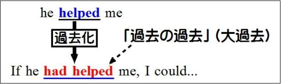
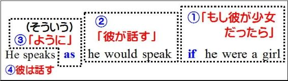
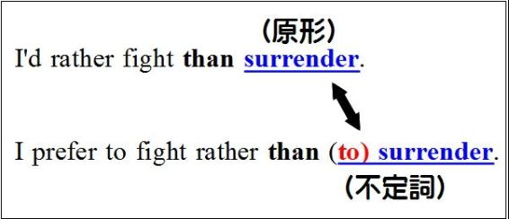
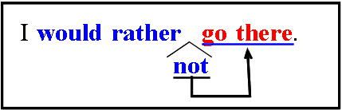

| どうしてそうなる 英文法＆イディオム 2 仮定法・助動詞 | |
| 橋 明男 | |
| (2013) | |
第2巻はしがき
第1巻（時制）に続いて、仮定法・助動詞を扱います。
普通は余り触れられていませんが、助動詞と仮定法とは密接な関係があります。
この点を明らかにするために、両者を同時に扱いました。
仮定法や助動詞を一度は学習したことがある方を念頭におき、かなりハイレベルな内容になっています。
執筆者紹介
（氏名）橋 明男（はしあきお）
（学歴）都立西高卒業。東大文一合格、東大法学部卒。
（職業）東京都内で学習塾を経営。これまでに大学受験英語の参考書を多数執筆。
「どうしてそうなる英文法＆イディオム」について
全体の構成として
第一部が英文法、
第二部がイディオム
です。
（第一部英文法について）
大学受験の英文法を楽しく学ぶ（Enjoy Grammar）を基本コンセプトに、アメブロ（アメーバ・ブログ）で4年間にわたって執筆してきたものに加筆・修正を行いました。
これまでの英文法の学習は退屈な丸暗記が中心でした。
しかし「どうしてそうなるのか」がわかると、勉強は楽しくなります。
そこで「理屈がわかれば勉強は楽しい」を基本理念に、「どうしてそうなるのか」をわかりやすく解説したのが本書です。
「大学受験に必要だからイヤイヤ学ぶ」ではなく、
「どうしてそうなるのか、もっと知りたい」という気持ちになれる文法書を目指しました。
（第二部イディオムについて）
第一部（英文法）と同様、「どうしてこの熟語が生まれたのか」を解説します。
このような説明ができないイディオム（熟語）は、全熟語の10％ほどしかありません。
残った全熟語のおよそ90％は、解説を読めばきっと「なるほど」と思って頂けるでしょう。
そういう熟語はすぐに覚えられますし、たとえ忘れかけたとしても「理解の糸」を手がかりに、記憶をたぐり寄せることができます。
ここでも「なるほど」と理解できれば、勉強は楽しくなるのはもちろんです。
つまり理屈を理解すれば、楽しく学べて、覚えやすく忘れにくくなるわけです。
英文法も熟語も退屈な丸暗記はやめて、楽しく勉強しましょう。
＜対象読者＞
①トップレベルの大学受験生（高3生、浪人生）および、高校1・２年生。
具体的には明治・青学・立教などのいわゆるMarchから、早慶・旧帝大を志望される方を念頭に置いています。
②TOEIC・英検などの試験に向けて英文法を学ばれている方（大学生・社会人）。
③英文法が苦手な先生方。
高校生を指導されている学校の先生方の中には、英文法が苦手だという方が結構多くいらっしゃるようです。そのような場合は本書を活用していただければ、学校の授業を楽しい(interesting)ものにする一助になるかもしれません。
＜本書の構成と読み方＞
本書は「解説」部分と「問題演習」の部分に大きく分けられます。
「解説」の部分は、理解することを第一にお読み下さい。
「問題演習」は【確認問題】と表記しています。本書では全部で49題（【確認問題1】～【確認問題49】まで）あります。
この問題のほとんどは大学入試に実際に出題された問題で、出題校も明示しました。
これらは入試問題の中でもかなり難しい問題を選んであります。
ほとんどが解説内容を理解していることを前提にした、応用問題です。
ですから学力に応じて次のようにお読み下さい。
【目安】(1)これまでに高校の英文法を１年以上学習されてきた方（主に高校3年生・浪人生。きちんと学習してきた高校２年生。TOEIC受験者）：実際に問題を解きながら読む進めて下さい。
(2)高校の英文法の学習が1年未満の方（高校１・２年生）：わからない単語も出てくるでしょう。その場合は辞書で調べながら、解いてみましょう。２回読むつもりで、１回目は答えを見ながら内容を理解することに重点を置いて下さい。２回目は実際に問題を解きながら読み進めてみましょう。
＜発行予定＞
以下のシリーズを予定しています（vol番号・発行日は変更になる場合があります）。
vol.2 助動詞・仮定法（2013年6月末を予定）
vol.3 受動態・動詞の語法・一致・話法（7月末予定）
vol.4 準動詞（不定詞・動名詞・分詞）（9月末予定）
vol.5 関係詞（関係代名詞・関係副詞・関係形容詞）（10月末予定）
vol.6 接続詞（11月末予定）
vol.7 形容詞・副詞・比較（12月末予定）
vol.8 疑問文・感嘆文・会話表現（2014年3月末予定）
vol.9 名詞・代名詞・冠詞（6月末予定）
前置詞は「熟語編」としてvol.10以降を予定。
第６４章 「過去の事実の仮定」（仮定法過去完了）（２）（問題演習）
第７０章 仮定法の慣用表現（２）（if onlyとwish+仮定法)
第７１章 仮定法の慣用表現（３）（if onlyとonly if）
第９４章 would rather...than～（その２）
第９５章 助動詞とnotの位置(would rather, had better, ought to)
確認問題番号
50-53： 仮定法か直説法か
54-57： 仮定法過去完了
58-60： 仮定法過去と仮定法過去完了
61-63： ifの省略
64： 仮定法の慣用表現（１）
65-69： 仮定法の慣用表現（２）
70-75： 時制の一致の例外
76-78： 要求・主張・提案のthat節
79： if節のない仮定法（１）
80-82： if節のない仮定法（２）
83-85： 助動詞と本動詞(need)
86-87： 助動詞と本動詞(dare)
88-89： 推量の助動詞+have+過去分詞
90-93： 推量の助動詞+have+過去分詞と仮定法過去完了
94-95： should+have+p.p.
96-98： would rather...than
99-101： 助動詞とnotの位置
第２部 仮定法
第５７章 仮定法入門（その１：仮定法とは）
前章までで時制の問題はほぼ網羅できた。
そこで、時制の問題と密接に関係する仮定法を考えて見よう。
というのは、ifを使った英文では
①「副詞節か名詞節か」の判定、
つまり未来のことを表すのにwillを使うか使わないかの判定の他に、
②「仮定法を使うべきかどうか」の問題も出て来て、問題が複雑化するからだ。
実際の試験では、この問題でかなり混乱する人がいるようだ。
あなたがそういうことにならないよう、ここではこの問題を一挙に解決してしまおう。
どういうところに問題があるのかを、まず確認しておこう（解説はここではあえて簡略化しています。今は正解が得られなくても、「どういう問題が出るのか」を理解する趣旨でお読み下さい）。
どの文もifを使った文である。
【練習問題】次の英文の( )内の動詞を適切な形にせよ。
(1) I want to know if it ( rain ) tomorrow.
(2) If it ( rain ) tomorrow, I will stay at home.
(3) If he ( try ) harder, he would succeed.
【練習問題解説】
(1)は「明日雨が降るかどうかを私は知りたい」の意味。if以下は「...かどうか」の意味でknowの目的語になっているから名詞節である。
tomorrowがあって明日のことを問題にしているから未来形のwill rainにする。
（解答）will rain
(2)は「もし明日雨が降れば、私は家にいます」の意味。
この英文でIf it ( rain ) tomorrowは「もしあした雨が降ったら」の意味である。これはどういう場合に「家にいる(will stay at home)」を説明している。だから副詞節だ。
副詞節は未来のことは現在形で表す。従ってIf it rainstomorrowとなる。
（解答）rains
(3)は「もっと熱心にやれば、彼は成功するだろうに」の意味。
この英文でIf he ( try ) harderは「彼がもっと熱心にやるならば」の意味である。これはどういう場合に「成功する(would succeed)」かを説明しているから、副詞節である。
ただし、この表現は仮定法の表現である（どうしてそうかは、後述する）。だからtryを過去形にしてtriedとする。
（解答）tried
つまりifが使ってあって同じような形をしているのに、未来形(will rain)になったり、現在形(rains)になったり、過去形(tried)になったりするわけだ。
この中で、「未来形か現在形か」の部分は「副詞節かどうか？」の判断だ。時制で詳しく検討した部分だ。
前章までは、仮定法が出て来なかった。だから「副詞節かどうか」だけを判断すれば良かった。下図のような判断だけだった。
そしてNoつまり「副詞節ではない」ということなら、未来のことにはwillを使う。
Yesつまり「副詞節」ということなら、未来のことに現在形を使う。これが今までに必要な判断だった。
しかしこれからは、「副詞節だ」ということになっても、仮定法かどうかの判定も必要になる。
問題文にifが出て来たら、上の二つの判定をいつも行わなければならない。
だからちょっと厄介だ。
これをスラスラできるようになることがここでの目標である。
たどり着くべき目標の提示が終わったから、早速本題に入ろう。
話しの流れとしては、
①仮定法と直説法の関係
②仮定法の形をキチンとマスターし、
その後で、
③「どういう時に仮定法を使うか」、英文が「仮定法かどうかの判定」
という順序で進めることにしよう。
まず初めは直説法と仮定法の関係である。
直説法の「せつ」は直接・間接の「接(×)」ではなく、説明の「説」を使う。
直説法というのは、
今のことは現在形、
過去のことは過去形、
未来のことは未来形、
というように、私たちが英語を習い始めてからずっと使ってきた表現方法である。
公立中学で学ぶ表現は全て直説法を使った表現であるし、これまで「時制」として扱ってきた問題も全て直説法である。
これに対して仮定法は、現在のことを表すのに過去形を使う。
例えば、直説法では「私は学生だ」は
I am a student.
というのに、仮定法で「私が鳥だったら」は
If I were a bird...
のように、過去形を使う(be動詞はwereを使うのが原則)。
過去形を使っているが、「あの時鳥であったならば」という過去の内容ではない。「もし私が今鳥であるなら」という現在の内容である。このように「今」のことなのに過去形を使う。
また主語がIなのに原則的にwereを使うということも、中学時代から学んできた内容とは異なる。
仮定法はこのように、これまで学んできた英語の表現方法、つまり直説法とは全く異なった形の表現方法である。
だから頭の中で思い描くイメージとしては、全ての英語表現は「仮定法と直説法に分けられる」と考えて上の図のようなイメージを持ってもらうことが必要だ(学問的にはこの二つの他に「命令法」――命令文のこと――を加えた三つの「法」を考える。しかしこのような分析はテストで点を取るという目的からはほとんど実益がない。だから「仮定法とそれ以外の表現」と単純化して考えれば良い）。
仮定法については
「どういう時にこれを使うのか」とか、
「どういう形になるのか」とか、
いろいろな疑問を持った人もいるだろう。
上の疑問については順を追って解説する。解説の順番としては、「仮定法はどういう形を取るか」から始めて、次に「どういう場合に仮定法を使うか」を見ていくことにしよう。
次回は「仮定法はどういう形を取るか」についてだ。
第５８章 仮定法入門（その２：仮定法の形）
この章では、仮定法を使った表現が具体的にどういう形になるのかを考えて見よう。
仮定法の具体的な形としては、文法書では次のように記述されているのが普通だ。
（内容） |
if節（もし...ならば） |
主節(...なのだが） |
呼び名 |
現在 |
過去形(be動詞はwere) |
助動詞の過去形+原形 |
仮定法過去 |
上の表は「現在」のことを記しているだけで、「過去」や「未来」のことは書かれていない。
ここでは仮定法を少しでも容易にマスターするため、まず「現在」に限って話しを進めさせてもらいたい。
仮定法を勉強したことのある人ならば、ほとんど全ての人が上の表を丸暗記したことがあるはずだ。「if節は過去形を使い、主節は助動詞の過去形＋原形を使う」という内容を。
しかし、「そういう退屈な丸暗記は極力やめましょう」というのが、本書の基本的なスタンスだ。
だからあらかじめお断りしておくが、「この表を丸暗記しよう」というのがここでの学習の進め方ではない。
だがしかし、まず上の表の内容を確認しておこう。
現在のことがらを仮定法で表現する時にはif節では過去形を使う(be動詞の場合、wereが原則)。だから「もし私が真実を知っていたら」の意味を英語で表すと、
If I knew the truth
となる。「今知っているなら」の意味なのに、過去形のknewを使う。
「もし...ならば」の意味のif節に対して「...するのだが」の意味を表す部分を主節という。この部分には「助動詞の過去形+原形」を使う。
だから「(もし真実を知っていたら)あなたにそれをお話しできるのですが」は
I could tell it to you
となる。
結局「私が真実を知っていたらそれをあなたにお話しするのですが」は
If I knew the truth, I could tell it to you.
となる。
これが上の表の意味である。
ただしそういう解説をそのままここで示すだけでは、退屈なだけだ。
だからここでは仮定法の原理にさかのぼった解説を試みよう。
仮定法の「原理」を覚える。そしてその原理に従えば結論が自動的に出てくる...そういう「原理」を追求してみよう。
そうすれば原理だけを覚えればよいから、暗記すべき内容はずっと少なくなり、忘れにくくなる。
それはどういうことかと言うと...
「私が真実を知っていたらあなたにそれをお話しできるのだが」は上で述べたように、
①If I knew the truth, I could tell it to you.
であるが、これを仮定法を使わない表現（つまり直説法）で表すとどうなるだろうか。
今「知っているなら」ということだから現在形のknowを使い、今「お話しできる」ということだから現在形のcanを使って、次のようになるはずだ。
②If I know the truth, I can tell it to you.
①はifを使った仮定法の表現、②はifを使った直説法の表現である。
両者を良く見比べてみよう。
前半を見ると、②のknowに対して、①はknewである。
後半は②のcanに対して、①はcouldである(couldはcanの過去形)。
つまり直説法を使った②はどちらも現在形なのに、仮定法を使った表現はどちらも過去形になっている。
つまり直説法の現在形を過去形にすれば、仮定法の表現ができあがる。
if節と主節の「両方を過去形にする」だけなのだ。
なんとシンプルなことだろう！そう思われた人も多いのではないだろうか。
私の言う仮定法の「原理」というのは、「if節と主節の両方を過去形にする」ということなのだ。
今回この文章を書くに当たって、私はかなり多数の例文を検討し直してみた。
すると仮定法を使った表現の半分以上が、このようにif節と主節の両方を過去形にするだけで完成することが判明した。
つまり「if節は...、主節は...」と細かいことを丸暗記するのではなく、単に「(if節と主節の)両方を過去形に」すれば半分以上は、正解を出せるわけだ。
「仮定法はどうも苦手だ」と言って、仮定法の勉強をなかなかやりたがらない人は結構多い。
「if節は過去形、主節は助動詞の過去形+原形」を使え、と丸暗記させられるのは退屈で苦痛だと感じる人も多いだろう。
しかし、「if節と主節の両方を過去形にする」だけだという話しなら、すんなりと受け入れてもらえるのではないだろうか。
但し、このやり方で100％の正解を出すことは残念ながらできない。残った部分は次回に確認しよう。
だがともかく、仮定法の半分近くはきわめてシンプルな話しなのだ。
だから肩の力を抜いて学習を進めよう。
第５９章 仮定法入門（その３：仮定法と助動詞の過去形）
直説法から仮定法の英文を作るには「if節と主節の両方を過去形にすればよいことが多い」というのが前章の内容だった。
今回は、be動詞を使った英文で再度確認しておこう。
「もし私が鳥だったら、彼女のところに飛んでいくのだが」を英文にする場合を考えよう。
「私は鳥だ」はI am a birdである。
だから「もし私が鳥だったら」はamを過去形のwereにする。仮定法ではbe動詞の過去形は普通wereを使う。
だから
If I were a bird
となるわけだ(wereの代わりにwasを使う場合もある。しかしそういう例外的な場合はしばらく除外し、出来るだけシンプルに考えていこう)。
「彼女のところに飛んでいくのだが」はどうか。
今はまだ飛んでいるわけではない、「（これから）飛んでいくつもりだ」という意味である。だから直説法を使った文は「...するつもりだ」の意味のwillを使ってI willfly to herとなるべき場合だ。
そしてこれを過去形にするわけだから
I would fly to her.
となる。willの過去形がwouldになることはおそらく解説はいらないだろう。
従って全体では
If I were a bird, I would fly to her.
となるわけである。
このようにbe動詞を使った場合でも、if節と主節の両方を過去形にすれば仮定法の文が完成する。
be動詞の過去形としては常にwereを使う、ということに注意するだけだ。
ここまでは前回の内容で解決できる問題だ。そして前回指摘したように、これで解決できる場合は非常に多い。
しかし百パーセントこのようにシンプルかというと、残念ながらそうではない。
例えば次のような場合だ。
「私があなただったら、彼女に毎日電話するけどね」という場合である。
前半の「私があなただったら」の部分は直説法のI am youを過去形にして
If I were youとすればよいから、この部分は特に問題はない。
しかし「彼女に毎日電話する」の部分は直説法だとI call her every dayとなる。「現在の習慣」を表す場合だから、現在形を使うべき場合だからだ。
但しこの場合は、callを過去形にしてI called her（×）とはしない。
助動詞の過去形を使ってI wouldcall her (every day)とする。
仮定法の文の作り方という観点からは、I call herにwillなどの助動詞を入れてI will call herを作り、これを過去形のwouldにする、と考えるとよいだろう。
実はこれまでの例はcanやwillなど全て助動詞を使う場合だった。そういう場合は助動詞を過去形にすればよい。
しかし過去形にする前の元の文に助動詞がない場合には、助動詞の過去形(ほとんどの場合would)を付けなければならない。つまり最終的に主節には助動詞の過去形が必要なのである。
なぜか？
それは助動詞の過去形が「仮定法の目印」だからである。次回はこの点について直説法と関連づけながら見ていこう。
ともかく仮定法については次のように整理しておくと良いだろう。
①直説法におけるif節と主節の両方を過去形にすれば仮定法の文になる。
②ただし主節に助動詞がない時には助動詞(具体的にはwill)を補ってから過去形にする（結論的にはwouldを入れる)。助動詞の過去形は仮定法の目印である。
第６０章 仮定法と直説法の識別（１）
前章までで、直説法の文から仮定法の文を作るには、
if節と主節の両方を過去形にすること、
その際には元の英文に助動詞がなかったらこれを補う必要があることを見てきた。
それは言葉を換えると、仮定法には助動詞の過去形が必要だ、ということである。
それはどういうことなのかを、「どういう場合に仮定法を使うのか」の問題と関連づけながら、もう少し詳しく見ていこう。
「（もし）...なら」の意味のifを使った文は次の二つの形がある。
(1)「(もし)私があなただったら、そんなことは言わない」
(2)「(もし)ジャックに会ったら、これを渡して下さい」
二つの表現のどこが異なるかといえば、「(もし)...ならば」の部分が、起こりえることかどうかである。
(1)の「(もし）私があなただったら」では、「私があなたである」ということは事実に反していて、そうなる可能性はない。このように事実に反していたり、起こりえない場合に仮定法を使う。だからこの部分を英語にすると
If I were you
となる。内容的には現在のことを言っているのに、過去形のwereを使うわけだ。
しかし(2)の「(もし)ジャックに会ったら」は、どうだろうか。
彼に会う可能性はあるわけだから、この場合には仮定法を使わず直説法を使う。
「会う」をseeで表すとすると、直説法を使うから現在形のseeを使って、
If I see him
となる。
「彼に会う」のは未来のことだが、if節が副詞節になるから、現在形(see)になるわけだ。
このようにその内容が、「起こりうるかどうか」によって仮定法と直説法を使い分けなければならない。
ここまでの内容は、全ての文法書に書かれている。文法書では普通、
「事実に反すること」や
「起こりえないこと」
を表す場合には仮定法が使われる、といった内容が書かれている。文法書で学習したことのある人ならご存じのはずだ。
しかし仮定法というのは、そんなに単純な話しではないのだ。
「起こりうるかどうか」は人間が判断するものである。だから人によって判断が分かれるケースがあるのだ。
以下の内容は私が調べたところでは、市販の文法書にはほとんど記述されていない。
しかし英語を理解するには是非とも必要なことがらだから、きちんと整理しておこう。
文法書にはほとんど載っていない内容だから、例文は英和辞典からの引用だ。
次の二つの英文を見てもらいたい。どちらも信頼の置ける英和辞典からの引用だ。
【例文①】
If he works hard, he will succeed. （一生懸命働けば彼は成功するでしょう）（ニューアンカー英和 if）
【例文②】
If he tried harder, he would succeed. (一生懸命やれば、彼は成功するだろうに)
どちらの英文にも「熱心に」の意味のhardと「成功する」の意味のsucceedが使われている。だから文の大まかな意味としては、どちらも「熱心にやれば、成功する」という内容だ。
だがよく見ると動詞の形（時制）が異なる。
if節では、①は現在形のworksなのに、②は過去形のtriedだ。
主節では、①はwill succeedなのに、②はwould succeedだ。
この違いはどうしてうまれるのだろうか？
結論から言うと、「彼が熱心にやる」ことが、「起こりうるかどうか」の違いである。
①は直説法の文である。直説法は、「起こる可能性がある」と考える場合に使われる。だから、「彼が熱心に働くこと」そして「彼が成功すること」を起こりうると考えている。
例えば、大学を卒業して就職したばかりの新入社員に期待を込めた言い方だ。
これに対して仮定法を使った②はそんなことは「起こりえない」と考えているわけだ。
昼間はパチンコ、夜はゲーム...と遊んでばかり。これまで何回もチャンスを与えられたのに、いつもそれをつぶしてきた。
そんな怠け者の彼に愛想（あいそ）をつかし、「熱心にやれば成功するのに、あいつはいつもやらない」という場合だ。「彼が熱心に努力する」ということは「あり得ない」と思っているわけだ。
「一生懸命やれば」という同じ内容であっても、それが起きる可能性があるかどうかは、その場の状況や、話し手の考えによって色々に変わりうる。
どちらと判断するかは、「話し手」がその場の状況に応じて決めるわけだ。

ことばというものは、話し手がその場の状況に応じて自由に作るものだ。
だから仮定法を使うかどうかの判断は、話し手が自由に行えるし、そうすべきものだ。
その場の状況によって、「起こりえない」と思えば仮定法を使い、「起こりうる」と思えば直説法を使う、というわけだ。
しかし、こうなると疑問に思う人がいるかもしれない。
どちらを使うかが人の気持ち次第であるのなら、テストの問題にはなりえないのではないか？
その人がどう思ったかで結論が変わる、だからテストでは正解が二つあることにはならないか？
という疑問だ。
しかしそういう心配はいらない。
仮定法を使う場合には「主節に助動詞の過去形を使う」と決まっているからだ
だから助動詞の過去形の有無に注意すれば、その文が仮定法を使っているかどうかを判断できるわけだ。
この点は次回更に詳しく見ていくことにして、和訳の問題を考えてみよう。
以上のような違いに対する「日本語訳」はどうすべきか、という問題である。
それぞれの英和辞典で、どのような訳になっているのかを見てみよう。
【例文①】 If he works hard, he will succeed.
の日本語訳は次のようになっている。
「いっしょうけんめい働けば彼は成功するでしょう」（ニューアンカー英和辞典）
これは直説法を使った文だ。
彼が一生懸命働くこと、そして成功することを「起こりうる」と思っている場合だ。そんなニュアンスがこの訳語からは伝わってくる。
他方仮定法を使った文ではどうだろうか。
【例文②】 If he tried harder, he would succeed.
仮定法を使っているから、彼が一生懸命やること、そして成功することを「起こりえない」と考えている場合だ。
ジーニアス英和はこの英文に対する日本語訳として次のような表現を示している。
「一生懸命やれば彼は成功するだろうに」（ジーニアス英和）
やれば成功するのに「そうなる見込みはないなぁ」という話し手の気持ちが伝わってくる日本語訳だ。
どのように和訳すべきか、あるいはどのような英文を作るべきか（どう英作文すべきか）を判断する際に、以上の分析はきっと役に立つことだろう。
ちょっと内容が複雑になってきたので、ここまでの内容を整理しよう。
①ifが「(もしも)...ならば」の意味を表す場合、その内容は「事実に反していて、実際に起こる可能性がない場合」と、「実際に起こる可能性がある場合」とがある。
②「実際に起こる可能性がない」場合は仮定法を使い、「実際に起こる可能性がある」場合は直説法を使う。
③「私が鳥だったら」のように、明らかに事実に反する内容の時には、仮定法を使う。
しかしその場の状況や、話し手の考え方しだいで、どちらを使うかの結論が分かれる場合がある。その場合話し手や文章の書き手がどのように考えたか、は主節に助動詞の過去形があるかどうかを見れば判断できる。あれば仮定法、なければ直説法である。つまり、助動詞の過去形は「仮定法の目印」である。
次回は英和辞典の例文を更に分析しながら、仮定法かどうかの判定に習熟していこう。
第６１章 仮定法と直説法の識別（２）
この章では前回までの内容を前提にして、更に深い内容を確認してみよう。
繰り返しになるが、仮定法か直説法かの判断は、
(1)常識を働かせて「事実に反すること、実際に起こりえないこと」であるかどうか、が基準になる。
(2)しかし(1)の判断だけでは判定が難しい場合は助動詞の過去形の有無を基準にする、ということである。
以下の例文はそれぞれ「仮定法かどうか」、「日本語訳はどのようにすればよいか」を考えながら読んでみてもらいたい（解答は【解答】の形で示す）。
【例文③】
If I hada million dollars, I would quit my job tomorrow. (新グローバル英和if)
内容的には「百万ドル(a million dollars)あったら、仕事を辞める(quit my job)」という話しだ。
百万ドルといえば、1ドル百円換算で1億円。
そんな大金をもっていれば...という話しだ。
株の値段がどんどん上がっていくような時には、「株で一億稼いだ」なんていう話しはよく耳にするから、そういう人たちにとっては実際に「起こりうる」話しだ。
しかし株の取引をしない一般市民から見れば、それは実際に「起こりえない」話しだ。
つまりその人の置かれた状況によって、「一億稼ぐ」という事実は実際に「起こりうる」場合もあれば、「起こりえない」場合もある。
このような場合に話し手がどちらなのかは、主節に助動詞があるかどうかで判断できる。
例文③では、主節に助動詞の過去形wouldがあるから、このようなことは「起こりえない」と考えているわけだ。
つまり株の取引はしない、一般市民の話しというわけだ。
だから日本語訳としては、「百万ドルあったら、明日にでも仕事を辞めるのだが」のように、そのようなことは実際に「起こる可能性はない」というニュアンスを持たせるのがよいだろう。
これに対して、株の取引をやっている人が、
「百万ドル稼いだら、仕事を辞めるつもりだ」
という場合は、直説法を使って次のように表現する。
If I get a million dollars, I will quit my job.
【例文③解答】
仮定法か直説法か：仮定法
日本語訳：「百万ドルあったら明日仕事をやめるのだが(実際はないので、仕事をやめられない)」
ここで注意してもらいたいのは、最終的な判断はあくまでも「主節における助動詞の過去形」だ、という点だ。
「if節が過去形だから仮定法だ」(×)という考え方は判断を誤る危険性がある。
例えば上の例文③で、
If I had a million dollars...
で、「if節に過去形hadがあるから、これは仮定法だ」(×)という判断はすべきでない。そのような考え方は誤りを犯す可能性がある。
例えば、次の例文を見て頂きたい。
【例文④】
If he did it, he committed a crime.(研究社英和中 if)
(注) commit a crime：罪を犯す
「もし彼がそれをやったのなら...」という話しだ。
彼が実際にそれをやったかどうかははっきりしない、それをやった可能性もある。そして「もしやったのなら、彼は罪を犯したのだ」と述べているわけだ。
つまり彼がそれをやったことは実際には「あり得ることだ」と話し手は考えている。
彼が過去にそれをしたかどうかが問題となっているから、過去形のdidが使われているだけの話しで、この文は直説法である(仮定法ではない)。
そしてそのことは主節に助動詞の過去形がないことから判断できる。
【例文④解答】
仮定法か直説法か：直説法
日本語訳：「彼がそれをやったのなら、彼は罪を犯したのだ」
この例文からもわかるように、仮定法かどうかの判定は、あくまでも「主節における助動詞の過去形」を基準にすべきで、if節の中を見ただけでは判断できない場合があることに注意しよう。
【例文⑤】
If I could drive, I would take you home. （ニューセンチュリー英和if)
「車の運転ができるなら家まで送ってあげよう」という内容だ。
車の運転はできる人とできない人がいる。車の運転免許を持っているかどうかの話しだ。
話し手がどちらなのかは、主節に助動詞の過去形があるかどうかで判断できる。
この例文では、主節に助動詞の過去形wouldが使われているから、仮定法の文である。
自分は実際には運転ができない。つまり車の免許をもっていない。
だから「もし運転ができたら」という内容は事実に反する。そのため仮定法が使われているわけだ。
【例文⑤解答】
仮定法か直説法か：仮定法
日本語訳：「もし運転できたら、家まで送ってあげるのだが」
ところで、この文ではif節の中に助動詞の過去形(could)が使われているが、if節の形を基準にして仮定法だと判断してはならない。
あくまでも「主節」に助動詞があるかを基準にする必要がある（ここでは主節のwouldを基準にして仮定法だと判断すべきである)。
【例文⑥】
If anybody comes, tell him I'm not at home.(新グローバル英和 if)
主節はtell him...だから「彼に...と言え」の意味の命令文である。
この場合は、「だれかが来る」ということは、「起こりうることだ」と話し手は判断したために、直説法が使われている。
「留守中にだれか来る」というのは、常識的に「起こりうる」。だから直説法が使われているわけだ。
主節は命令文になっているが、仮定法かどうかの判断においては、命令文も直説法の一部と理解して良い。
【例文⑥解答】
仮定法か直説法か：直説法
日本語訳：「彼が来たら私は留守だと言って下さい」
仮定法の判別は重要だと思うので、例文を多めに用意してご検討いただいた。
次章では実際の入試問題を見ながら、ここまでの内容を確認しよう。
第６２章 仮定法と直説法の識別（３）（問題演習）
ここまでは仮定法の作り方に関して、
①if節と主節の両方とも過去形（但しbe動詞はwere）にすれば仮定法の文になること。
②ただし、元の文（直説法の文）の主節に助動詞がない時には、助動詞を入れてから過去形（通例would）にする必要があること。
それは、
③助動詞の過去形が仮定法の目印であるからだ。
ということを指摘してきた。
実際の試験では、ifが使われていたら慎重な思考プロセスが必要になる。これを確認しながら、仮定法の問題に習熟しよう。
【確認問題50】
If I were you, I（ ）him.(拓殖大）
（選択肢）
a. help
b. helped
c. had helped
d. would help
【確認問題50解説】
「私はあなただったら、彼を助けます」の意味。
「私があなたである」ということは、事実には反することが明らかだから、仮定法を使うべき場合である。言い換えると、発言者の置かれた状況や考え方によって結論が左右される場合ではないから、常に仮定法を使うべき場合である。Iの後ろがwereになっているのはそのためである(Iの後ろにwereが続く場合は常に仮定法である）。
仮定法では主節には必ず助動詞の過去形を使う。従ってd.のwould helpが入る。
【解答】
d. (would help)
【確認問題51】
If the water（ ）too hot, the kettle will switch off automatically.（千葉商大）
（選択肢）
a. get
b. gets
c. got
d. will get
<ヒント>getは「...になる(=become)」の意味。get too hotで「熱くなりすぎる」の意味。
【確認問題51解説】
「水が熱くなりすぎると、ケトルは自動的にスイッチが切れます」の意味。電動ケトル（電動湯沸かし器）が省エネのために、自動的に電源が切れるというわけだ。
主節はthe kettle will switch offとなっていて、助動詞の過去形がない。だから直説法である。自動的にスイッチが切れるというのは、「起こりうる」ことだから、直説法を使っている。
だから仮定法の形である過去形(got)ではなく、現在形のgetsを選ぶ。If the water gets too hotは「水がもし熱くなりすぎたら」の意味の副詞節である。だからwillを使わないことに注意（選択肢d.のwill getは不可）。
【解答】
b. (gets)
上の問題では念のため＜ヒント＞を付けておいたが、getが「...になる(=become)」の意味になることは、極めて重要(cf. get well：元気になる、病気が治る）。
【確認問題52】
He would go mad if he（ ）that.
（選択肢）
a. hears
b. heard
c. has heard
d. would hear（文教大）
＜ヒント＞go mad：「気が狂う；（気が狂ったように）激怒する」(goは「...になる(=become)」の意味。
【確認問題52解説】
「彼がそれを聞いたら気が狂ってしまう[激怒する]だろう」の意味である。
if節が後ろ、主節が前にあることに注意しよう。主節がHe wouldgo madとなっていて助動詞の過去形があるから、仮定法である。
「彼がそれを聞く」つまり、人がある話しを耳にするということは、普通は「起こる可能性がある」ことだ。
しかしこの場合、話し手はそういうことが現実には「起こりえない」と考えているために、このように述べているわけだ。
「（現実には起こりえない話しだが）もし彼がそれを耳にしたら、彼は気が狂ってしまうだろう[激怒するだろう]」というのがこの文章の意味である。
このように一見すると起こりそうなことでも、話し手の気持ちによって仮定法が使われる場合がある。だから主節の動詞の形、つまり助動詞の過去形の有無には十分注意しよう。
この問題文では仮定法が使われているから、if節には過去形のheardを選ぶ。
【解答】
b. (heard)
＜goやgetの意味について＞
この問題でgoは「...になる(=become)」の意味で使われているが、goがbecomeと同じ意味になることは入試では極めて重要である。
前問で扱ったgetの他に、本問のgoや更にはcomeも「...になる(=become)」の意味になる(「夢が実現する」のcome trueなど)。
文法書を読むと「becomeの意味になる単語」について、わざわざ一章を設けて記されている。
しかしこれは「単語の意味」の問題であって、文法としてわざわざ項目を設けて学ぶべき内容とはいえないだろう。私がそのような内容をここで書いたら、読んでいるあなたはきっと退屈するだろうし、私だってそれは同じだ。
しかしgoやcomeが「...になる」の意味になることはとても重要だ。だからこういう「単語の意味」の問題は、問題をやりながら少しずつ覚えていくのが良いだろう。
ところで「行く」の意味のgoは「来る」の意味のcomeに対して逆の意味である。だからcomeは「好ましい状態になる」場合に使うのに対して、goは「好ましくない状態になる」場合に使う。
ex. The meat wentbad. (肉が悪くなった[腐った])
Her dream cametrue. (彼女の夢は本当になった[実現した])
ともかくget, go, comeが「...になる(=become)」の意味になることは是非とも覚えておこう。
【確認問題53】
We'll go for a swim if it（ ）fine tomorrow.
（選択肢）
a. will be
b. is
c. was
d. were（慶大）
【確認問題53解説】
「明日晴れたら私たちは泳ぎに行きます」の意味。「泳ぎに行く」はgo swimmingを使うことが多いが、go for a swimという言い方もある。
この問題も主節が前、if節が後ろである。
そして主節はwe'll goとなっていて助動詞の過去形がない。だから仮定法ではなく、直説法である。「明日晴れる」ことは「起こる可能性がある」と話し手は考えているわけだ。
だから過去形のwereやwasは使わない。
「明日(tomorrow)」は未来だが、if節が副詞節になっているから、現在形を使う(副詞節では未来のことを現在形で表す)。
【解答】
b. (is)
第６３章 「過去の事実の仮定」（仮定法過去完了）（１）
仮定法に関しては
①if節と主節の両方を過去形にする、
②ただし最終的に主節には助動詞の過去形が必要だから、助動詞がない時にはそれを補う必要があること、
③助動詞の過去形は仮定法の目印であること
の三点を見てきた。
例えば
(a)「彼が私を助けてくれれば、すぐにそれを終えられるのだが」
を英語で表すと、
If he helped me, I could finish it soon.
となる。
これは「（今）彼が助けてくれたら」、「（今）終わらせることができる」ということで、
he helps me,
I can finish
をそれぞれ過去形にした形になっている。
if節と主節の両方を過去形にするわけだ。
以上はこれまでに学んできた内容であり、過去形を使っているからこのような表現を仮定法過去と呼ぶ。仮定法はこのように現在の内容を表すのに、過去形を使う。
これに対して過去の事実を仮定する場合はどうなるか、がこの章でのテーマである。
例えば
(b)「彼が私を助けてくれていたなら、すぐにそれを終えられたのだが」
のような場合である。
この問題を考えるに当たっては、時制の箇所で学んだ大過去の用法を思い出そう（→第16章「大過去」を示す過去完了と、過去完了進行形）。
ここで「大過去」の過去完了を軽く復習しておこう。
ex. She lost the bag her mother had boughtthe previous day. (彼女は母が前日に買ってくれたカバンを無くした)
She lostとなっていて、過去形が使われている。だから彼女がカバンを無くしたのは過去のことだ。
そしてそのカバンは、紛失した前日(the previous day)に母に買ってもらったものだ。
つまりカバンの紛失よりも、前にカバンを買ってもらっていたわけだ。
このように過去の事実(ここではカバンの紛失)よりも前に起こったことを表すためには、過去完了(had+過去分詞)を使う。
過去完了はこのように「過去よりも一つ前の過去」つまり「過去の過去」を表すために使われる。この用法を「大過去」という。
仮定法は直説法の表現を主節・if節の両方とも過去形にすれば良いことはこれまで何度も指摘してきた。
このような考え方に「『過去の過去』は過去完了だ」という考えを当てはめてみよう、というのが私の提案だ。
つまり「過去形を更に過去形にすると、大過去(had+過去分詞)になる」という考え方だ。
だから、「彼が（あのとき）私を助けてくれていたなら」はhe helped meを過去完了にしてhe had helped meにすれば良いわけだ。

主節の形はどうだろうか。
今回は「（彼が手伝ってくれていたら）それを終わらせることができた」の部分（主節）をどうするかである。
直説法で表すとI could finish it soonとなるが、これを仮定法にするにはどうしたらよいだろうか？
これまで直説法から仮定法を作るには、全て「過去形」にするという手順を踏んできた。
「今回も同じ手順を踏もう」ということなのだが、could finishをどういう形にしたらよいのだろうか？
helpedをhad helpedにしたようにcouldを過去完了にできればよいが、助動詞の過去完了はない。そこでその後ろのfinishをhave finishedにする。つまり「完了形」にする。
英語では過去の時制を表現したいが、素直に過去形にできない場合に完了形（have +過去分詞）を使うのが普通である。
これは
完了形のto不定詞(to have+過去分詞）、
完了形の動名詞(having+過去分詞)、
助動詞+完了形(may have+過去分詞など)、
など、英語全般に共通して見られる現象である。
不定詞・動名詞・助動詞などはいずれも後に学習する内容だから、順序が逆になってしまうが、ここで簡単に紹介しておこう。
例えば、「彼女は事実を知っているようだ」は
She seems to know the fact.
だが、「事実を知っていたようだ」は
She seems to have known the fact.
と表現できる。to knowがto have knownになっている。
この表現ではseemの後ろにto不定詞があるが、to不定詞は「to+動詞の原形」と決まっている。だから「知っていたようだ」をto knew(×)とはできない。
だから、過去形のknewの代わりに完了形のhave hadを使う。
同じように「ベスは今日は家にいるかもしれない」は
Beth may be at home today.
だが、「昨日は家にいたかもしれない」は
Beth may have been at home yesterday.
と表現できる。may beがmay have beenになっている。
to不定詞ではtoの後ろに原形が来なければならないのと同じように、mayなどの助動詞の後ろは原形でなければならない。だから「家にいたかもしれない」をmay was(×)とはできない。
だから過去形のwasの代わりに完了形のhave beenを使うわけだ。
このように「過去形にしたいのにできない」場合に、「完了形(have+過去分詞）」を使うのが英語全般に共通して見られる現象である。
仮定法に話しを戻そう。
仮定法ではcould finishをどうやって「過去形」にするかだが、couldなどの助動詞の後ろは原形と決まっている。だからfinishを過去形にはできない。そこでto不定詞の場合と同じように完了形（have +過去分詞）にするわけだ。
主節が「助動詞の過去形+have+過去分詞」になることに関して、私は学生の頃、柔道の「合わせ技」の発想を取り入れて、頭の中を次のように整理していた。
「（助動詞の）過去形」と「have+過去分詞」を「合体」させると、「過去完了」になる。
このように考えれば、if節も主節もどちらも「過去完了」になる、と理解できる。
私と考え方が似ていて、こういう考え方に賛同できる方は、ご利用下さい。
次章では以上の内容を、入試問題で確認してみよう。
第６４章 「過去の事実の仮定」（仮定法過去完了）（２）（問題演習）
前章までに確認したことを前提に、実際の入試問題にチャレンジしてみよう。
例によって難しい問題も入っているから、気を引き締めてどうぞ。
【確認問題54】
"I couldn't finish my homework yesterday."
"If you（ ）me, I would have helped."
（選択肢）
a. had asked
b. have asked
c. should ask
d. would ask（センター試験）
【確認問題54解説】
「私は昨日宿題を終わらせることができなかった」
「あなたが私に頼んでいたら、私は助けてあげたのに」の意味。
主節はwould have helpedという形（助動詞の過去形+have+過去分詞)で、過去の事実に反対のことが仮定法を使って述べられている。
if節は単に過去完了にすれば良いからhad askedを選ぶ。askはここでは「頼む」の意味。askは「尋ねる」の他に、「頼む」の意味があることに注意しよう。
【解答】
a. (had asked)
【確認問題55】
"Was Jack at the party?"
"I don't think so. If he had been, I（ ）him."
（選択肢）
a. had seen
b. saw
c. would have seen
d. would see（センター試験）
【確認問題55解説】
「ジャックはパーティにいたの？」
「いなかったと思うよ。もしいたのなら、私は彼に会っただろうから」の意味。
if節がhad beenという過去完了になっていて、過去の事実に反対の内容を述べている。
仮定法では主節に助動詞の過去形を使うが、過去のことがらはその後ろが「have+過去分詞」になる。
【解答】
c. (would have seen)
【確認問題56】
If you had prepared for the exam, you（ ）have passed it.
（選択肢）
a. can
b. could
c. need to
d. will（センター試験）
【確認問題56解説】
文の意味は「もしあなたが試験の準備をしたなら、それに合格しただろう」の意味になることは容易に推察できるだろう。
これは事実に反する内容であるから、仮定法を使うべき場合である。
このような判断はIf節の動詞がhad preparedという過去完了の形、つまり仮定法過去完了になっていることにも符合する。
このように「仮定法を使っていること」更にその内容は「過去のことがらであること」から、主節は「助動詞の過去形+have+過去分詞」(couldhave passed)になると判断できる。
【解答】
b. (could)
【確認問題57】
Jim（ ）. Even if he hadn't practiced, he still would have won.
（選択肢）
a. didn't win the race
b. lost badly
c. should win
d. won the race easily（センター試験）
【確認問題57解説】
「ジムは（...）。たとえ練習しなかったとしても、それでも彼は勝っていただろう」の意味。
第２文のEven ifは「たとえ...でも」の意味（この表現は重要だから後に詳しく解説する）。この第２文はif he hadn't practicedつまり過去完了となっている。他方主節はwouldhave wonつまり「助動詞の過去形+have+過去分詞」になっている。ということはif節も主節もどちらも過去のことがらを仮定法を使って述べていることがわかる。
だから「ジムは簡単に勝った。たとえ練習しなかったとしても、それでも彼は勝っていただろう」とすればよい。この部分は仮定法ではなく直説法だから、過去の事柄は過去形で表す。
【解答】
d. (won the race easily)
第６５章 仮定法過去と仮定法過去完了の混在
仮定法過去と、仮定法過去完了が混在した形になる場合がある。下の図の枠と矢印の部分だ。
実際の問題で確認してみよう。これまでの内容をキチンと把握してあれば、難しいとは感じないはずだ。
【確認問題58】
If I（ ）a computer last year, I'd still be using my old typewriter.
（選択肢）
a. hadn't bought
b. haven't bought
c. shouldn't buy
d. wouldn't buy （センター試験）
【確認問題58解説】
「去年コンピュータを買わなかったら、古いタイプライターをまだ使っていたことだろう」の意味。
前半のif節は去年つまり過去の事実を問題にし、後半の主節は現在のことを問題にしている。
このように「昔...していたら、今は...だろう」の意味を表すには、前半のif節は過去完了にし、後半は「助動詞の過去形+原形」にする。上の図の赤い枠と矢印の部分である。
問題文に即せば、「去年買わなかったら」の部分は、過去のことだから過去完了を使う(hadn't bought)。
これに対して「（今は）まだ古いタイプライターを使っていることだろう」の部分は現在のことだから助動詞の過去形+原形を使う(would still be using)。
【解答】
a. (hadn't bought)
【確認問題59】
If you had not helped them, they（ ）in London.
（選択肢）
a. would still be
b. will still be
c. would have still gone
d. will have still gone （関西大）
【確認問題59解説】
「あなたが彼らを助けなかったならば、彼らはロンドンに（...だろう）」ということで、空所に何を入れるかを判断しなければならない。
文頭のIf節が過去完了(had not helped)だから、この部分は過去のことがらを仮定している（仮定法過去完了）。
仮定法だと、主節には助動詞の過去形が必要。従って正解の可能性があるのは選択肢a. (would still be)と選択肢c. (would have still gone)ということになる。
どちらも「まだ」の意味のstillがあるから、選択肢a.のwould still beを入れて「まだロンドンにいるだろう」の意味にするのが適切である。
選択肢c.のwould have still goneを選ぶと、は「まだ(ロンドンに)行っただろう」の意味になり、文として意味内容が不適切になる。
選択肢a.を選べば主節は、they would still be in Londonとなり、文全体の意味は「もしあなたが(あの時)彼らを助けていなかったならば、彼らはまだ今もロンドンにいたことだろう」となって文の意味内容が適切になる。
【解答】
a. (would still be)
【確認問題60】
As his father was killed in the accident, he is not happy.
= If his father had not been killed in the accident,（ ）.
（選択肢）
a. he is happy now
b. he would have been happy now
c. he would be happy now
d. he were happier now （立命館大）
【確認問題60解説】
be killed in the accidentは「事故で殺される」→「事故で死ぬ」の意味。第一文は「父が事故で死んだので、彼は（今）幸せではない」の意味。
Ifを使って「もし父が事故で死ななかったならば」の意味にする場合は、事実に反する内容を表すことになるから､使うのは仮定法である。
そして父が事故で死んだのは過去のことだからif節は仮定法過去完了を使ってhad not been killedとなる。
これに対して主節は現在のことを述べるから、仮定法過去つまり「助動詞の過去形+原形」を用いる。従ってwould be happy now（今彼は幸せだったろうに）が正解である。
【解答】
c. (would be happy now)
現在や過去の事実を仮定する表現が終わったので、次章では未来の内容を仮定する仮定法未来を検討しよう。were toやshouldを使った表現についてだ。
第６６章 仮定法未来(were to)
現在や過去の事実を仮定する仮定法の表現が終わったので、未来の内容を仮定する表現を考えよう。
未来のことを仮定する表現は、その内容が「起こりうる」ことであれば直説法を使う（仮定法は使わない)。
例えば「明日晴れたら、泳ぎに行きます」を英語で表す場合、明日晴れるという事態が「起こりうる」場合には、
If it is fine tomorrow, I will go swimming.
である。
If節は副詞節だから、「明日」つまり未来のことを述べていても現在形を使う。
しかし、「起こりえない」ことを仮定する場合には仮定法を使う。これにはwere toを使ったものと、shouldを使ったものの二つがある。
例えば「明日第三次世界大戦が起きたら」などの場合だ。
戦争はある時突然起こるものではない。仲の悪いいくつかの国が話し合いをして、それでも結論が出ず「交渉決裂」となって、もう武力行使でしか解決する手段がない、という情勢になって始めて起こるのが戦争である。
今は国家間の小さな紛争はあるが、世界大戦と呼べるほど大きな戦争を引き起こすような大きな紛争はない。だから「第三次世界大戦が明日起こる」可能性はゼロである。
このように未来のことではあるが、起こる可能性は０パーセントで絶対起こらない（と話し手が考える）場合には「were to+原形」を使う。
ex. What would you do if war were tobreak out? (もし仮に戦争が起きたら、あなたはどうしますか）（ジーニアス英和 if)
このようにwere toをif節に使うと主節は「助動詞の過去形+原形」になる。
仮定法だから主節に助動詞の過去形が必要なことはこれまで何度も繰り返してきたところだ。
しかしそれだけでなく、主節の形に関しては、未来のことを表現する場合も（→仮定法未来を使う）、現在のことを表現する場合（→仮定法過去を使う）も同じ形になる。
少しわかりにくいので、詳しく見てみよう。
現在のことを仮定する仮定法過去では、例えば
If I were rich, I would buyit. (金持ちならそれを買うのだが)
のように「would+原形」になる。
だが、were toを使う場合も同じ形になる。
If it were to rain tomorrow, the ceremony would bepostponed. (明日雨になれば、式典は延期されます)(プロシード英和)
つまり、仮定法を使う場合は「現在」のことを表す場合（仮定法過去の場合）も、「未来」のことを表す場合(were toを使う場合）も、どちらも「would+原形」という同じ形になる。
言い換えると、仮定法の主節は、「現在」と「未来」の区別が明確ではないということだ。
実はこれは日本語でも同じである。
「金持ちならそれを買うのだが」の「買う」は、「これから金を出して買う」ということつまり、「未来」を意味するともとれるし、「今買う」つまり「現在」を意味するともとれる。現在か未来かが明白ではないわけだ。
このように内容的に未来のことを仮定しif節にwere toを使う表現を仮定法未来と呼ぶ。
この名前の付け方は、仮定法の他の用法とは異なるから注意しよう。
仮定法過去は過去形を使うから仮定法過去という。内容的には現在のことを述べているが、仮定法過去と呼ぶ。
同じように仮定法過去完了は過去完了を使うから仮定法過去完了という。内容的には過去のことを述べているが、仮定法過去完了と呼ぶ。
つまり、仮定法過去や仮定法過去完了は、動詞の形に着目してそう呼ばれている。
これに対して仮定法未来は、「未来」の内容を表すからそう呼ばれる。
動詞の形に着目して付けられた名前ではない。
ところで「どうしてwere toを使うのか？」と疑問を持った方はいないだろうか？
以前とても優秀な生徒に、そのような質問を受けたことがある。
これに対する回答は、少し難解なものになる。
学力のある人でなければ理解が難しいかもしれない。しかしだからといってこれに何も言及しないのは、解説としては片手落ちのような気がする。
なので、内容が少し難解になることを前提にお読み頂きたい。
「be+to不定詞」は未来の予定を表す用法がある。
普通は不定詞の箇所で学習する内容だ。
ex. We are tomeet at seven. (私たちは7時に会合することになっている)
この未来の予定を表す「be+to不定詞」を仮定法として使ったのがwere toだと考えられる。
「be+to不定詞」はこのほかに、可能・義務・意図・用途などを表す。これについては準動詞で解説しよう。
未来のことを表す表現はwere toの他にshouldもある。次章ではこれについて見てみよう。shouldはwere toと比べてちょっと複雑で厄介だから注意が必要だ。
第６７章 仮定法未来（「万一のshould」）
were toが実現の見込み0%の場合なのに対して、shouldは実現の「見込みがもう少しある」場合に使われる。
「万一...したら」の意味を表すから、このようなshouldの用法は「万一のshould」と呼ばれることがある。
「万一」というのは、元々は「万に一つ」ということである。だからそれが起こる確率は一万分の1、つまり0.01%ということになる。しかし実際にはそれほど厳密ではなく、起こる確率が数％程度－つまり「ほとんど滅多に起きない」という場合－に広く使われる。
were toとshouldのこのような違いは、主節の形に反映される。「万一のshould」を使った場合、主節の形は少し複雑になるのだ。
実際の例文で見てみよう。
ex.①If I should fail, what wouldmy parents say? (万一私が失敗したら、両親はなんと言うだろうか）←仮定法(ニューセンチュリー英和）
②If it should rain, I willstay in. (万一雨が降ったら、家にいます)←直説法（ニューアンカー英和）
例文①は仮定法、②は直説法である。つまり「万一のshould」を使った場合、主節は仮定法になる場合と、直説法になる場合があるということだ。
これは内容がちょっと複雑だが、「万一のshould」が置かれた位置を考えれば、容易に理解できる。それはつまり次のようなことだ。
were toは実現の見込み0%だから、仮定法つまり、助動詞の過去形が使われる。これはwere toが完全に仮定法の領域に入り込んだ表現だということだ。
しかし、「万一のshould」は、「万に一つ」とはいえ、「実現の見込みが多少はある」という場合である。図で表すと、直説法と仮定法の中間の位置に位置し、両方にまたがっていると理解するとよいだろう。
そのため主節をどうするかに関して、人の考え方やその場の情勢によって判断が分かれるのだ。
①この場合も広い意味で「実現の見込みがない」と考えて仮定法の形、つまり助動詞の過去形を使う場合もある。
②他方この場合も「実現の見込みはある」と考えて直説法を使う場合もある。
ようするに、shouldは仮定法と直説法の中間的な存在だから、発言者の気持ちや置かれた状況によって、仮定法になったり直説法になったりするわけだ。
第６８章 ifの省略
仮定法のif節は、倒置の形（疑問文の形）をとってifを省略することがある。
ex.① If I had known earlier, I would have helped you.
→Had I known earlier, I would...(もっと前に知っていたらあなたを助けたのだが)
このifの省略は、どんな表現でも常に可能な訳ではない。should, were, hadを用いた場合に限られる。
例えば、「もし私が鳥だったら」の
ex.② If I were a birdは
Were I a bird
になる。
「万一彼が来たら」の
ex.③ If he should comeも
Should he come
になる。
しかし、「もし私がそれを知っていたら（教えてあげられるのだが）」の
If I knew itは
ifを省略する形にはできない。
ただし、「どのような場合にifの省略が可能か」を直接問う問題は出題されないから、このことはほとんど気にしなくて良い。
だから「倒置にするとifを省略出来る」とシンプルに覚えておけば十分である。
むしろもっと大切なことは、試験で「ifの省略がある」と見抜けるようになることである。その為の問題演習を繰り返すことがテストの点を上げるには大切だ。
実際の試験では前回扱ったshouldやwere toだけが出題されることはそれほど多くない。むしろifの省略とからめて出題されることのほうが多い。
例えば次のような形だ。
【確認問題61】
（ ）anything happen, please let us know immediately.
（選択肢）
a. If
b. Should
c. May
d. Since（拓殖大）
【確認問題61解説】
「万一何か起きたら、私たちにすぐに知らせて下さい」の意味。
If anything should happen...が元々の形で、ifを省略してShould anything happenの形になったものである。
【解答】
b. (Should)
この問題で空所に選択肢a.のIfが入らない理由はおわかりになるだろうか？
空所にIfを入れるとIf anything happen(×)となってしまう。anythingは三人称単数形だから三単現の-sをつけてhappensとしなければならないが、問題文はそのようになっていない。だから空所にはIfは入らないわけだ。
一応ここで明言しておくが、anythingは単数である。
中学で「someを使った文を否定文にするとanyに変わる」と教わるものだから「anyの後ろは複数形だ」と思っている人が多い。
しかしanythingは単数である。any thingsであれば複数形だが。
anythingだけでなくanybody, anyoneなども単数である。
更に言えばsomethingも単数であり(some thingsならば複数)、someの後ろが常に複数形になると考えるのも誤りである。
anyやsomeの意味と用法は、辞書にいろいろたくさんのことが書かれていて暗記も大変だ。だがその本質を根底から解明すれば、極めてシンプルである。このことは後に詳しく解説することにして、ここでは仮定法の問題を見ていくことにしよう。
【確認問題62】
（ ）I known you were ill, I'd have called to see you.
（選択肢）
a. If
b. As
c. Have
d. Had （玉川大）
【確認問題62解説】
（ ）I known...とknownが単独で使われていることに着目する。これはIf I had known...のIfが省略されてHad I known...となったもの。
Ifが省略される前の形は、以下の通り(callは「立ち寄る、訪問する」の意味）。
If I had knownyou were ill, I'd have called to see you. (もしあなたが病気であることを知っていたら、お見舞いに伺ったのに）
【解答】
d. (Had)
【確認問題63】
Had I not slipped, I（ ）.
（選択肢）
a. might have won
b. will have won
c. would win
d. could win （立命館大）
【確認問題63解説】
前半のHad I not slipped...はIfの省略で、If I had not slipped(もし私が滑らなかったら）の意味。
if節は仮定法過去完了で、過去の事実の反対の事柄が述べられている。主節の内容もそれに応ずる形で「（もし私が滑らなかったら、）私は勝っていたかもしれない」とすべきだから、仮定法過去完了を使ったmight have wonとする。
選択肢c.のwould winや選択肢d.のcould winだと、「勝てるのだが」という現在の意味になってしまうから、不適切である。
【解答】
a. (might have won)
第６９章 仮定法の慣用表現（１）（wish+仮定法)
仮定法を使った慣用表現は数が多い。まずはその中から「wish+仮定法」を見ていこう。これは例えば次のように使われる。
ex. I wish I were a bird. (鳥だったらなあ)
この表現はwishの後ろにthatが省略されている。これは「（...である）こと」の意味を表す名詞節である。これは
He says (that) he likes the singer. (彼はその歌手が好きだと言っている)
のthatと同じ用法である。このthatは省略されることが多い。このようなthatを「接続詞」という。
ここでのI wish (that) I were a bird.はだから直訳すると「私が鳥であること(that)を私は望んでいる(I wish)」ということである。
thatのこの用法は中学で学ぶ内容だから、解説としてはこの程度で十分だろう。関係代名詞との相違など、詳しくは別の箇所で解説する予定だ。ともかくHe says (that)...のthatと同じような用法だということをまず確認しよう。
ここでもっとも中心的なテーマとして扱いたい問題は次の二点である。
①どうして仮定法を使うのか、
②どういう形を取るのか、
である。
「...したい」「...だったらいいのになあ」という願望を表す表現は
want, hope, wishなどを使って表せる。
wantやhopeはそうなる見込みがある場合に使われる。
ex. I wantto be a doctor. (医者になりたい)(小学館プログレッシブ)
I hopethat you will pass the exam. (君が試験に受かることを願っています)(小学館プログレッシブ】
これに対してwish(that) S+Vの場合は、通例「実現できる見込みがない」ことを望む場合に使われるのが普通である。
一般に「あり得ないこと、起こりえないこと」を表現する場合に仮定法が使われる。だからwishを使って「あり得ないこと」を願望する場合には仮定法が使われるわけだ。
これで上の①「どうして仮定法を使うのか」が解決出来た。
問題は②「どういう形を取るか」である。
仮定法といってもif節と主節は動詞の形が異なる。
if節は過去形や過去完了を使う。
しかし主節は「助動詞の過去形+原形」や「助動詞の過去形+have+過去分詞」を使う。
どちらを使うのかもしっかりと、把握しておかなければならない。
結論からいうと、if節の形を使う。
それではなぜif節の形を使うのだろうか？
それはwish (that) S+Vが実質的にはifS+Vに極めて類似した意味を持っているからである。一言で言えば、「鳥だったら(If I were a bird)」と、「鳥だったらなぁ(I wish I were a bird.)」とは、ほとんど同じ内容を表すからだ。
まずifを使った「(もし)鳥だったら」から見てみよう。
この表現は例えば「空を飛べるのに」のように「...できるのに」などの表現と結びつく形で使われる。「鳥だったら、空を飛べるのに」のように。
これに対してwishを使った「鳥だったらなあ」も「鳥だったらなあ。空が飛べるのに」のように、「...できるのに」などの表現と結びつく形で使うことができる。
つまり「...だったらなあ」の方も「...できるのに」と結びつくわけだ。
つまり「鳥だったら」と「鳥だったらなあ」はどちらも「空を飛べるのに」と結びつけられるし、その結果生まれた二つの表現はだいたい同じような意味を表す。
つまり「鳥だったら(If)」と「鳥だったらなあ(I wish)」はほとんど同じ意味を表している。だから英語ではどちらも同じ動詞の形を使って、
If I were a bird,...
I wish I were a bird.
とするわけである。
wishを使った表現では、if節の形が使われること、そしてそうなる理由が理解できれば、過去の事柄を願望する場合に、wishの後ろに過去完了が来ることも容易に理解できるだろう。
ex. I wish I had not boughtthat book. (あんな本買わなければよかったのになぁ）
第７０章 仮定法の慣用表現（２）（if onlyとwish+仮定法)
前回「wish+仮定法」の形を解説した。そこで重要なポイントは、この表現は実質的にはif節と同じ内容を表すからif節の形が使われる、ということだった。
今回は前回の解説から更に踏み込んだ表現を見てみよう。
それはif onlyである。
文法書を読むと「仮定法を使った慣用表現」の箇所にif onlyがあって、I wishと同じような意味だと記されているのが普通だ。
だがどうしてifとonlyが合体してif onlyとなると、I wishと同じような意味になるのだろうか。問題集の中には「if only = I wishと割り切って考え」ろ、などと記述しているものもある。「丸暗記しろ」という趣旨なのかもしれない。
しかしそういう学習は、センター試験をはじめとするハイレベルの大学には通用しない。
次の問題を見てもらいたい。センター試験の問題だ。
【確認問題64】
David was badly injured in the accident. If onlyhe had left home five minutes earlier, he（ ）involved in it.
（選択肢）
a. was
b. was not
c. would have been
d. would not have been （センター試験）
【確認問題64解説】
問題文の第一文(David was badly injured in the accident.)は、「デビッドは事故で大けがをした」の意味だ。
それに続く第二文はIf onlyhe had left home five minutes earlier,...となっている。
このif onlyは「(もし)...ならば」の意味のifにonlyが加わった形だ。
onlyがなくて、
If he had left home five minutes earlier
となっていたら、
「もし彼が家を５分早く出ていたら」の意味だ。
これにonlyが加わったものがif onlyである。
If only he had left home five minutes earlier
onlyは「...だけ」の意味なのだから全体では「もし彼が家を５分早く出ることだけをしていたら」の意味になる。
「家を５分早く出ることだけをしていたら」というのは、日本語としては少し変だから、わかりやすい普通の表現に直せば、「家を５分早く出ていさえしたら」などの意味になる。
だから上の問題は、「５分早く家を出ていさえしたら、その事故に巻き込まれなかっただろう」の意味にすればよいから、過去の事実と反対の事実を述べる仮定法過去完了を使ってwould not have beenを選べばよいわけだ。
【解答】
d. (would not have been)
文法書では、「if only = I wish」と書いてあって、それ以上の解説はほとんどないのが普通だ。まるでそれを「丸暗記しろ」とでも言わんかのような姿勢だ。
しかし、私がここで申し上げたいのは、そういうことは丸暗記すべきことではない、ということなのだ。
if onlyは「ifを使った普通の文章にonlyが付いただけの表現だ」ということなのだ。そのことは上のセンター試験の問題を見ればおわかり頂けるだろう。
だがif節にonlyが付いただけのif onlyを、なぜわざわざ「I wishと同じ意味だ」と取り上げるのだろうか。
その本質を端的に表現すると、「省略」である。
例えば、
If only I had five more minutes.
では、「あと五分だけでもあれば」というのが元々の意味である。
あなたは、「もう五分だけでもあれば」という状況を経験したことはないだろうか？
例えば入学試験や学校の定期試験で時間不足を経験したことは誰にもあるだろう。
「もう少し時間があれば答えを出せるのに...」という場合だ。
「あと5分だけでもあれば」というのは、そういう場合に発せられることばだ。
このように「あと５分だけでもあればこの問題が解けるのに」の後半部分「この問題が解けるのに」を省略して発言することは、私たちの日常でも時々あるだろう。
この「あと５分だけでもあればなぁ」は、「あと５分だけでも欲しいなぁ」ということである。だからI wishと同じような意味になるのが普通だ。
if only...はもちろんif節の形を使うから、
「あと5分ありさえすれば」は
If only I had five more minutes.
となり、
I wish I had five more minutes.
と同じような意味になるわけだ。
第７１章 仮定法の慣用表現（３）（if onlyとonly if）
これまで見てきたif onlyと似た表現にonly ifがある。
「if onlyとonly ifは形が似ているが、意味が異なるから注意しろ」と指摘されることが多い。
この点にも注意して見ていこう。onlyの使い方、ひいては副詞の使い方が理解できるからだ。
まず、二つの表現の意味が異なったものになる原因を解明しよう。
onlyは修飾される表現の近く、特に多くの場合にその前に置かれる。
①Onlyyou can do it. (あなただけがそれをやれる)
このonlyは「あなた(you)」にかかり「あなただけ」の意味を表す。
②I onlyopened your desk drawer. (私は君の机の引き出しを開けただけです)
このonlyは机の引き出しを「開けた(opened)」にかかり、「引き出しを開けただけだ」の意味を表す。
onlyに限らず副詞は一般に修飾される語のできるだけ近くに置かれ、特にその前に置かれることが多い(ex. This book is veryinteresting.(この本はとてもおもしろい)など)。
これを前提に考えるとonly ifとif onlyの意味の相違は理解しやすいだろう。
only if S+Vは「Sが...する場合(if S+V)にだけ(only)」ということだ。
ex. I will go only ifshe goes. (私は彼女が行く場合しか行きません)
「彼女が行く場合にだけ私は行きます」→「彼女が行く場合しか行きません」ということだ。
これに対してif onlyは例えば次のように使われる。
③If onlyyou had studied harder, you could have passed the exam. (もっと熱心に勉強しさえすれば、試験に合格出来たのに)
onlyがyou had studied harderにかかり「あなたがもっと熱心に勉強することだけをしていたら」が元々の意味で、ここから「もっと熱心に勉強していさえすれば」の意味になる。
そしてこれから更に「もっと熱心に勉強していさえすれば良かった」のニュアンスになる。このことは前章で前述した通りだ。
第７２章 仮定法の慣用表現（４）（問題演習）
ここまでの内容を問題演習で確認してみよう。wishの用法に関してはまだ、解説すべきことが残っているから、それも見てみよう（→確認問題67）。
【確認問題65】
I hope she（ ） tomorrow. （文教大）
（選択肢）
a. came
b. will come
c. would come
【確認問題65解説】
願望を表す表現は、hope, wish, wantなどの動詞を使って表現できるが、hopeはその願望が実現可能な場合に使われる。だからhopeの後ろは直説法を使う。
「彼女が明日来る」ことは未来のことだからwillを使う。
【解答】
b. (will come)
【確認問題66】
Ido wish you（ ）so much. （横浜市大）
（選択肢）
a. don't smoke
b. didn't smoke
c. won't smoke
【確認問題66解説】
「あなたがそんなにたくさんタバコを吸わなければいいのにと、私は本当に願っている」の意味。
I do wishのdoは＜強調＞を表す。「本当に、確かに」などの訳語が当てはまることが多い。
wishは事実に反すること、起こりえないことを願望する場合に仮定法とともに使う。
英文のyouは、現在はタバコをたくさん吸っていて、「吸わないでくれればいいのに」という願望が表現されている。従って仮定法過去を使った形(didn't smoke)が正解になる。
【解答】
b. (didn't smoke)
【確認問題67】
He wishes he（ ） harder when he was young.
（選択肢）
a. had studied
b. studied
c. has studied
d. would study(青学大)
【確認問題67解説】
「若かった時に、もっと熱心に勉強しておけばよかったと彼は思っている」の意味。
過去の事実と反対の内容を願望しているから、過去完了(had studied)を使う。
【解答】
a. (had studied)
【確認問題68】
I can't hear him. Iwish he（ ）a little louder.
（選択肢）
a. would speak
b. will speak
c. speaks
d. can speak （南山大）
【確認問題68解説】
wishは事実と反対のこと、起こりえないことを願望する場合に使われるから仮定法と共に使われる。
そしてif節の内容と実質的には同じ内容を表すから、if節と同じ形になる。
このことは第55章（仮定法の慣用表現（１）（wish+仮定法））で詳述した。
しかし例外が、未来のことを願望する場合である。
未来の事柄を仮定する場合には、were toやshouldを使った。仮定法未来と呼ばれる表現だ（→第52章、第53章）。
これに対して、「wish+仮定法」で未来のことを願望する場合は、willの過去形を使う。
ex. I wish he wouldgo. (彼が出て行ってくれたらいいんだが)（小学館プログレッシブ和英）
wishは起こりえないことを仮定法で表し、それは時制を一つ前の形にするということだから未来を表すwillが過去形のwouldになる、と理解すればよいだろう。
問題文では、I wish he spokea little louder.とすれば、「もう少し大きな声で（今）話してくれたらよいのだが」
の意味を表すのに対して、wouldを使って
I wish he would speak a little louder.
とすると、「もう少し大きな声で（これからは）話してくれるとよいのだが」の意味を表す。
【解答】
a. (would speak)
【確認問題69】
If only you（ ） me the whole story at that time!
（選択肢）
a. have told
b. had told
c. told
d. would tell （玉川大）
【確認問題69解説】
「あの時、一部始終を私に言ってくれるだけ(only)でもしていてくれたなら(if)」→「あの時一部始終を話してくれてさえいたなら」ということ。
「（話してくれていたら）こんなことにはならなかったのに」「（話してくれていたら）よかったのに」など色々と言いたいことがあっても、それを省略してあえて口に出さずにいるもの。
その本質はif節にonlyが加わっただけのものであるから、if節の形を選べば良い。
「あの時に(at that time)」があるから過去の内容にする。従って仮定法過去完了(had told)が正解になる。
【解答】
b. (had told)
第７３章 it is time+仮定法
「It is time+仮定法」は「...する時間だ」の意味である。
例えば次のように使われる。
ex. It is time you were in bed. (君は寝ている時間だ)
こういう例文は仮定法を学習したことのある人なら、一度はお目にかかっているはずだ。
だが私の長年の指導経験からすると、仮定法の慣用表現の中では、テストでの正解率が最も低い事項の一つだと言ってよいかもしれない。
使われている単語はどれも簡単な単語だし、文の意味も特に難しいものではない。それなのになぜそんなことになるのか。
私に思い当たる原因は次のようなことだ。
このIt is timeの後ろは仮定法が来るのだが、「どうしてそうなるのか」を理解せず、丸暗記だけしているものだから、しばらく時間がたつとすっかり忘れてしまう。そういう人がとても多いのではないだろうか。
だからこの表現がどうして仮定法を使うのかを、しっかり理解してもらうことがとても重要だと私は考えている。
理屈がわかれば、忘れにくくなるからだ。
どうして仮定法が使われるのかを問題とする前に、この表現に関して問題となることがらをまず解決しておこう。
主語のItは何か、timeの後ろにセンテンス(S+V)が来るのはなぜか、という問題である。
まず主語のItに関してであるが、このItは時を表す時に使うものだ。
例えば「今は六時です」は
It is six (o'clock).
というというが、このItと同じだ。
だからIt is time...は「今は...な時間だ」の意味を表す。
次にtimeの後ろにセンテンス(S+V)が来るのはなぜかを見てみよう。
この表現はtimeの後ろにthatが来る場合と来ない場合がある。つまり、
It is time (that) you were in school.
ということで、timeの後ろに来るthatは省略が可能である。
この場合のthatはtimeを先行詞とする関係代名詞の一つの発展形である。
関係代名詞は「...する先行詞」と訳すことは、中学で学習したはずだ。
だから「time (that) S+V」は「Sが...する時間」の意味になる。
このthatは厳密には関係副詞でありwhenと置き換えられる。
ただ関係副詞についてはまだ十分な解説をしていないから、ここではこの点に深く関わるのはやめよう。
関係詞の問題は、後に十分に時間をかけて解説する。だから「関係詞は苦手だ」という人も、余り心配せずに学習を進めてもらいたい。
ともかくここではtimeの後ろに来る関係詞(thatあるいはwhen)が省略されているから、「time+S+V」で「Sが...する時間だ」の意味を表すということをしっかり確認しておいてもらいたい。
以上で細かい問題が解決したから、ここでの本命である仮定法に話しを進めよう。
この表現を理解するポイントは、この表現が「どういう状況で使われるか」を理解することである。
ここでは説明の都合上、次の例文を題材に説明しよう。
ex. It is time you were in bed. (あなたは寝ている時間だ)
この文は次のようなシチュエーションで使われる。
夜の9時には寝ることが日課になっている子供がいたとしよう。小学生の低学年なら9時前に寝るのが普通だ。
そういう子供が、遊びに夢中になって夜の10時を過ぎても起きていた。
するとお母さんに見つかって「あなたは寝ている時間でしょ！」と凄い剣幕で怒られてしまった。
そういう場合に使われるのがこの表現である。
It is timeの後ろにどうして仮定法を使うのかという問題は、日本語と対比させながら考えるとわかりやすいかもしれない。
その際には、この少年はベッドの中にいるべき時間なのに、ベッドの中にいないという点に着目することが大切だ。
日本語はこのような状況でどう表現するかを考えてみよう。まず「...べきだ」という表現を使って、
①「君は寝ているべき時間だ」と表現できる。
他方「...べきだ」という表現を使わないで次のように表現することもできるだろう。
②「君は寝ている時間だ」
夜更かししている子供に激怒したお母さんが息子に
「○○ちゃん！ 寝て(い)る時間でしょ！」
とも言うだろう。
カンカンに怒っている母親の言葉としては、「べき」を付けて
「寝ているべき時間でしょ」
というよりは、「べき」を付けないで
「寝ている時間でしょ」
という方が自然かもしれない。
ともかく、上のような状況では、日本語の場合
「寝ているべき時間だ」とも言うし、
「寝ている時間だ」とも言うわけだ。
英語もこれに対応している。
「...べきだ」を使って「君は寝ているべき時間だ」を意味する表現は、
(1) It is time you should be in bed.
である(It is timeの後ろに「should+原形」を使う例文は、辞書の例文としては示されていないことが多いが、開拓社・英米語用法辞典(p. 617)によればこれも正用法である)。
他方「...べきだ」を使わないで「あなたは寝ている時間でしょ！」を意味する表現はどうなるだろうか。
shouldを使わずに、どう表現するかということなのだが、
(2) It is time you arein bed. (×)
とはしない。
この少年は今はベッドの中にいない。つまり
You are not in bed.
である。だから...time you arein bed(×)とは言えないわけだ。
以前「時制の一致」の箇所で、英語は「文の一部だけを取り出して来た場合に、事実に合った内容にする」傾向が見られると指摘したことがある（→第３９章時制の一致（その２：なぜ起こるか））。
ここでもyou arein bed(×)とすると、事実に反することになるから、そうはできないのだ。
そこで仮定法を使う。
仮定法は例えば「もし私が鳥だったら」を
If I ama bird (×)
とすると、I am a birdの部分は事実に反している。実際は「私は鳥ではない」のだからI am not a bird.が事実に合致する。
このように文の一部を取り出して来た時に、事実に反する内容になる場合は仮定法を使ってI werea birdとする。
ここでも同じだ。少年はベッドの中にいないから、you are notin bedというのが事実に合致するのであって、you are in bedは事実に反する。だから仮定法を使ってyou werein bedとするわけだ。
仮定法は事実に反する内容の場合に使われること、
It is time S+Vが使われる状況を理解すること、
この二つを考えれば、仮定法が使われる理由は理解してもらえるのではないだろうか。
ところで、It is timeで始まる表現では仮定法を使った表現の他に、to不定詞を使った表現もある。
It is time to go to bed. (寝る時間だ)
これは、仮定法を使った上の表現とは、使われる状況が異なる。
to不定詞の形容詞的用法は、「...すべき」の意味がある。
例えば、
I have a lot of things to dotoday. (今日はやるべきことがたくさんある）
この「...すべき」の意味のto不定詞を使った表現が上で示した、
It is time to go to bed.
である。
これは夜9時に寝るのが日課の子供の場合、9時少し前に歯を磨いたり、パジャマに着替えたりというように、寝る準備をする必要がある時に「寝るべき時間だ」の意味で使う表現である。
以上の解説に関して、小学館プログレッシブは次のように解説している。参考のために示しておこう。
「It is time for you to go to school.は単に『学校に行く（べき）時間です』の意。It is time you went to school.は『本当なら学校に行ってなくてはならない時間なのにまだ行ってない』という含みがある」（小学館プログレッシブ time)
「It is time+仮定法」に関して、私なりにわかりやすく解説したつもりだ。
繰り返しになるが、この表現は丸暗記だけで対応すると、「すぐに忘れる」という結果に陥りやすい。だからこの点には特に注意して学習しよう。
第７４章 as if+仮定法（その１）
as if S+Vは「まるでSが...かのように」の意味で文法書には必ず載っている表現だ。
これは例えば次のように使われる。
ex. He speaks as ifhe were a girl. (彼はまるで女の子のように話す)
このas ifは文法書では普通、「仮定法の慣用表現」として扱われるのが普通だ。しかし、as ifの後ろには仮定法ではない表現、つまり直説法がくることもある。
このことは英文法の入門書ではあまり触れられていないようだが、レベルの高い文法書や、英和辞典にはたいてい記載されている。
as ifの後ろが仮定法になったり、直説法になったりするのは何故なのか。この点も視野に入れながら、as ifがどうして上に述べた意味になるのかを考えていくことにしよう。
まずasの意味であるが、これは「...のように」の意味である。
ex. Do it asyou were told. (言われたようにそれをやりなさい)
asがこのような意味になることは、ほとんどの方がご存じだろう。
ここでのas ifはそのような意味のasの後ろに「...ならば」の意味のifが加わったものである。このas ifは文の一部が欠落しているもので、その欠落部分を補った元々の形は次のようになる。
英文の意味まで考えるとちょっと難しくなるから、まずは日本語の意味を図の①～④の順で考えてもらいたい。

①「もし彼が少女だったら(If he were a girl)」
②「彼が話す(he would speak)」
③「ように(as)」
④「彼は話す(He speaks)」
というのが元々の意味である。
「仮にもし彼が少女だったら、彼は少女っぽく話すだろうが、そういうように彼は話す」という意味だ。
だから「彼はまるで少女のように話す」の意味になる。
つまりas ifを使った元々の表現は次の形である。
He speaks as he would speak if he were a girl.
これは次のようなプロセスを踏んでてas if he were...になる。
この文ではHe speaksとasの後ろのhe would speakが内容的に重複している。
だから後ろの方にあるhe would speakを省略する。
こうしてできたのがas ifという表現である。
ここまで理解できればしめたものだ。
as ifの後ろのifはだから「（もし）...ならば」の意味であるわけだ。だからその後ろに何が来るかという問題は、仮定法の最初の箇所で述べた「直説法と仮定法の区別」の基準がそのままの形で当てはまるわけだ。
次回はas ifの後ろにどのような形が来るのかを具体的に考えてみよう。
第７５章 as if+仮定法（その２）
前回はas ifという表現が生まれた経緯を見た。これを足掛かりにして、as ifの後ろにはどのような形が来るのかを見よう。
結論的には
①仮定法の過去形（仮定法過去）
②仮定法の過去完了（仮定法過去完了）
③直説法
の三つが考えられる。
①仮定法の過去形が来る場合（仮定法過去）
これは前回扱った
「彼はまるで少女であるかのように話す」
のケースである。これは
(1) He speaks as (he would speak) if he were a girl.
のhe would speakが省略されたものである。これは前回確認した内容だ。
彼は実際には男であって女ではない。だから「彼がもし女であれば」がif he werea girlとなることから、as ifの後ろは(he) were(a girl)になる。
②仮定法の過去完了が来る場合（仮定法過去完了）
これは例えば、
「彼はまるで自分がそれをやったかのような態度だ」というような場合である。
これは
He acts as (he would act) if he had done it himself.の ( )内が省略されたものである。
「それを自分でやった」は過去の内容である。仮定法で過去の内容を表す場合、if節は過去完了(had+過去分詞)を使う。だからas if he had done it himselfとなる。
①②の表現ではいずれもif以下に仮定法が使われている。
「彼が少女である」とか、「まるで自分がそれをやったかのように」というのは、いずれも現実の事実には反する内容である。だから仮定法を使うわけである。
このように事実には明らかに反していたり、あるいは話し手が「あり得ない」と判断する場合には仮定法を使う。
これに対して「起こりうる」「あり得る」と話し手が判断する場合には直説法を使う。
③直説法を使う場合
(3) It seems as if we arethe first to come here. (どうやら私たちが一番乗りのようですね）(小学館プログレッシブas)
これも基本的にはasの後ろにit seemsが省略されたものだと考えてよい。
It seems as (it seems) if we are the first to come here.
ここでは「私たちが来たのが最初だ」という事態が「あり得る」と話し手は思っている。だからifの後ろに直説法を使っている。
そして内容的には現在の内容だ。だから現在形のareが使われているわけである。
要するにas ifは「（まるで）...のように」の意味の熟語だが、asは「...のように」ifは「もし...ならば」の意味を持ち、その二つが組み合わさってできた表現である。
だからifを使った普通の文と同じように考えれば良いわけで、「あり得ない」ことだと思えば仮定法を使い、「あり得る」ことだと思えば直説法を使うというわけである。
ここまではas ifが生まれた経緯を理解してあれば容易に解決出来る内容だろう。
しかしこの表現についてはもう一つ考えるべきことが残っている。それは上の(1)～(3)を過去形にしたらどうなるか、という問題である。次回はこれについて考えてみよう。
第７６章 as ifと時制の一致（その１）
これまではas ifの後ろに仮定法が来る場合と、直説法が来る場合を見てきた。
その要点はas ifは「(まるで)...のように」の意味だが、
「...のように」の意味のasと
「もし...ならば」の意味のifが組み合わさってできたものである。
だからifの後ろがどういう形になるかは、ifを使った普通の文と同じように考えれば良い。つまりその内容が「事実と反対」だったり、「あり得ない、起こりえない」場合には仮定法を使う。しかしその内容が「起こりうる」場合には直説法を使う(もちろんそのどちらであるかの判定は、話し手が行う)。
このことを前提に次の三つの英文を題材に、「主節を過去形にするとどうなるか？」を考えてみよう。
以下の(1)～(3)の下線部を過去形にするとas if以下はどうなるだろうか。
(1)He speaks as if she werea girl. (彼女はまるで少女であるかのように話す)を「まるで少女であるかのように話した」にするとどうなるか？
(2) He acts as if he had doneit himself. (彼はまるで自分でそれをやったかのような態度だ)を「まるで自分でそれをやったかのような態度だった」にするとどうなるか？
(3)He looks as if he is havingdifficulty in breathing. (彼は息苦しそうだ)を「彼は息苦しそうだった」にするとどうなるか？
どういう形にしたらよいか、ちょっと時間を取って考えてもらいたい。
（解答）
(1)(2)は下線部を過去形にしても、as ifの後ろは形が変わらない。
(1)→(1')He spoke as if he werea girl. (まるで少女のように話した)
(2)→(2')He acted as if he had doneit himself. (彼はまるで自分でそれをやったかのような態度だった)
しかし(3)はas ifの後ろが過去形のwasになる。
(3)→(3')He looked as if he washaving difficulty in breathing. (彼は息苦しそうだった)
これはどのように考えたらよいのだろうか？
この問題は、受験生であればおそらく一度は聞いたことがある「原則」を適用すると導かれる結論である。
それは「時制の一致とその例外」というテーマである。
次章では仮定法における「時制の一致の例外」を詳しく見ていこう。
第７７章 as ifと時制の一致（その２）
第1章でも解説した内容だが、次の場合には時制の一致が適用にならない（時制の一致の例外）。
(1)普遍の真理
(2)現在も当てはまる習慣
(3)歴史上の事実
(4)仮定法
の四つだ。
(1)～(3)は時制の箇所で詳述したから、ここでは(4)仮定法に絞って話しを進めよう。
仮定法に時制の一致の適用がない、ということは具体的にはどういうことかを見ていこう。
例えば、
He wishes he werea bird. (彼は自分が鳥だったらいいのにと思っている)
の主節をwishes→wishedにすると次のようになる。
→He wished he werea bird. (彼は自分が鳥だったらいいのにと思った)
主節が現在形→過去形となっても、wereはそのままである。
仮定法では時制の一致が適用にならないことは、次のように整理するとよいだろう。
「時制」は直説法の中でどのような形の動詞を使うかの問題で、仮定法は直説法とは別の世界の表現だから、直説法の影響は受けない、ということである。
そして同じ現象は「as if+仮定法」にもみられる。
ex. He talks away as if he knew everything. (彼は何でも知っているかのようにしゃべりまくる)
→ He talked away as if he kneweverything. (彼はいかにも何でも知っているかのようにしゃべりまくった)(小学館プログレッシブ和英)
主節がtalks→talkedとなっても、as ifの後ろの形は変わらない。
as ifの後ろが仮定法の過去完了になる場合も同様である。
She looks as if she had seena ghost. (彼女はまるで幽霊を見たかのような顔をしている)
She looked as if she had seena ghost. (彼女はまるで幽霊を見たかのような顔をしていた)
つまり結論としては「まるで...であるかのように」を「as if+仮定法」で表す場合は、主節の時制にかかわりなく、
「まるで...である・するかのように」はas if+過去形
「まるで...だった・したかのように」はas if+過去完了
で表す。
仮定法には時制の一致が適用がない。日本語も同じように時制の一致という現象はない。だから、as if+仮定法でどういう形を使うかの判定に当たっては、日本語を基準に考えればよいということだ。
大学入試での私の経験からすると、as ifは英作文で使うことが多い。だからこの形を正確に書けるようにしておくことはとても重要だと思う。
直説法を使うのか、仮定法を使うのか、
時制の一致が適用になるのかならないのか、
という二つの判断が必要になるから、ちょっと厄介だ。
次章では問題を用意したから、それを通じてこの表現に十分習熟しておいてもらいたい。
第７８章 as ifと時制の一致（その３）
ここまでの内容を問題演習で確認してみよう。
【確認問題70】
He treats me as if I were a little boy.
= He treats me（ ） a little boy.
（選択肢）
a. like
b. with
c. something
d. thinking（日本工業大）
【確認問題70解説】
as if I were a little boyは「まるで私が小さな子供であるかのように」の意味。likeは「...のように」の意味の前置詞で、like a little boyとすると「小さな子供のように」の意味になるから、as ifを使った表現と書き換えが可能である。
全体では「彼は私をまるで小さな子供のように扱う」の意味。
【解答】
a. (like)
【確認問題71】
Nicola swims very well as if she（ ） a mermaid.
（選択肢）
a. are
b. will be
c. were
d. has been (國學院大)
【確認問題71解説】
「ニコラはまるで人魚のように、とても上手に泳ぐ」の意味。Nicolaが人魚(mermaid)であることはあり得ないから、仮定法を使う。「...であるかのように」の意味になる場合だから、現在の事実と反対のことを表現する仮定法過去、つまりwereを使う。
本問では過去完了(had been)が選択肢に含まれていないが、仮に含まれているとした場合に、過去形を使うか過去完了を使うかの判断は次のように行えばよい。
「...であるかのように（～する／～した）」や
「...するかのように（～する／～した）」
の場合は「as if+仮定法過去(wereなど)」を使う。
他方「...だったかのように（～する／～した）」や
「...したかのように（～する／～した）」
の場合は「as if+仮定法過去完了(had beenなど)」を使う。
【解答】
c. (were)
【確認問題72】
I remember that Jim was always talking as if he（ ）everything.
（選択肢）
a. knew
b. has known
c. know
d. had known(上智大)
【確認問題72解説】
「ジムは何でも知っているかのようにいつも話していたのを、私は覚えています」の意味。
「なんでも知っているかのように」となる場合だから、仮定法過去のknewを選ぶ。
Jimの後ろが現在形の場合は、
Jim is always talking as if he kneweverything. (ジムはいつも何でも知っているかのように話す)
であるが、過去形になってwas talking...となってもknewは変わらない。
Jim was always talking as if he knew everything. （ジムはいつも何でも知っているかのように話した)
仮定法には時制の一致が適用にならない、ということである。
【解答】
a. (knew)
【確認問題73】
You looked（ ） a ghost when you came out of the house. What happened?
（選択肢）
a. like to have seen
b. like seeing
c. as though to have seen
d. as if you had seen （中央大）
【確認問題73解説】
as ifの他にas thoughも「まるで...のように」の意味を表す。但しこの表現が生まれた由来ははっきりしない。大変に申し訳ないのだが、丸暗記して下さい（m(_ _)m）。
英文の意味は以下の通り。
「君は家から出てきた時、まるで幽霊を見てきたかのような顔をしていたよ。何かあったの？」
as if = as thoughだから、「まるで幽霊を見てきたかのような」の部分にはas ifやas thoughで表現できる。
ここでは「まるで幽霊を見てきたかのような」の意味になるべき場合だから、過去完了(had seen)を使った選択肢d. (as if you had seen)を選ぶ。
as ifの後ろに過去形を使うか、過去完了を使うかは、「まるで...する[である]かのように」の意味になるか、「まるで...した[だった]かのように」になるか、で判断すれば良い。
as ifの後ろに仮定法が続く場合、仮定法は時制の一致が適用にならないから、同じく時制の一致がない日本語と同じ結論になる。だから日本語を基準にして結論を導き出せばよい、ということだ。
【解答】
d. (as if you had seen)
【確認問題74】
He opened his mouth（ ）to say "No," but he didn't.
（選択肢）
a. as far
b. as if
c. as much
d. what if
【確認問題74解説】
as ifの後ろにto不定詞が続き、as if to sayのような形を取ることがある。
ex. He shook his head as if to sayno. (彼はイヤだとでも言うかのように、首を振った)
このas if to sayを「...と言うかのように」の意味の熟語として扱っている文法書もあるが、この表現の本質は、as ifの後ろに続く表現の省略である。
上の表現で省略された部分を補うと次のようになる。
He shook his head as if (he shook) to say no.
he shookという表現が二回続くから、後ろが省略されている。to sayは「...するために」の意味（to不定詞の副詞的用法)。「イヤと言うために(to say no)首を振るかのように(as if he shook his head)、彼は首を振った(He shook his head)」が元々の意味。
【解答】
a. (as if)
【確認問題75】
We waited for John for an hour, but it seemed as if he（ ）never show up.
（選択肢）
a. shall
b. may
c. will
d. would (北海学園大)
【確認問題75解説】
「私たちは一時間ジョンを待ったが、彼は決して現れることはないようだった」の意味。
as if以下の内容は「現れそうにない」という事態は、「起こりうる」事態だ。だからas ifの後ろに仮定法ではなく直説法を使うべき場合である。
そして「彼が姿を現す(show up)」のは、内容的には未来のことがらだからwillを使うべき場合であるが、主節の動詞が過去形(seemed)になっているから、時制の一致によりwouldになる。直説法は時制の一致の適用があることに注意しよう。
【解答】
d. (would)
＜発展的学習＞
上の問題は実は結構複雑な問題も含んでいる。as ifという表現が生まれた起源については第60章で解説した。
そこで解説したようにifは「もし...ならば」の意味の接続詞である。だからif節は副詞節を導くはずだ。とすれば、直説法では未来のことにwillを使わないはずであり、as if...will/wouldの形にはなりえないという結論が導かれるはずだ。
しかし、「as if+直説法」では､未来のことを表すのにwillやwouldを使う例は多数見られる。
ex. It looks as if our candidate willwin. (我々の候補が勝ちそうだ)(新グローバル英和)
It seemed as if the undertaking wouldgo well, but my elation was short-lived. (事業がうまくいきそうだと思ったが、ぬか喜びだった)(プログレッシブ和英「ぬか喜び」)
look as if S+Vやseem as if S+Vは、seem that S+Vと書き換えることができる。
このような場合は as if全体がthat節と同様に名詞節の働きをしているように感じられるからだろう(seem thatの場合は未来の内容にはwill/wouldを使う)。
第７９章 要求・主張・提案のthat節（その１）
「要求する」の意味のdemandや、「主張する」の意味のinsistを使った英文は、ちょっと注意が必要な形になる。
例えば、「私は彼に部屋を出て行くよう要求した」をdemandを使って表すと、次のような形になる。
ex. I demanded that he (should) leavethe room. (私は彼に部屋を出て行けと要求した)（ニューアンカー英和）
つまり、that節の中を
「should+原形」にするか、
shouldを省略して「原形だけ」にするか
のどちらかにしなければならない。
shouldを省略した場合は、特に「変な形」になる。例えば上の英文は
I demanded that he leave the room.
となる。
主節が過去形のdemandedなのに、leaveとなっている。
時制の一致が適用になるのなら過去形のleftになるはずだし、
時制の一致が適用にならないのなら、三人称単数現在（三単現）の-sが付いてleavesになるはずだ。
それなのに、時制の一致も、三単現の-sも無視する形(he leave)になるわけだ。
be動詞を使う場合は、もっと露骨だ。
They demanded that wages beraised by 30,000 yen. (彼らは賃金が3万円上がるよう要求した)(プログレッシブ和英)
普通の英文なのに、demanded...wages beとなるわけだ。
これまで英語を何年間も学習してきた人にとっては、ちょっと「異常な事態」だと言ってもよいかもしれない。だから逆に試験ではこの点がよく問われる。
次の問題はその代表例だが、こんなのは本当に枚挙に暇がないほどだ。
【問題例】
The customer demanded that the meat（ ） in his presence.
（選択肢）
a. be cut
b. could be cut
c. cut
d. might be cut （明治学院大）
【解説】
「お客は彼のいる前で肉を切るよう要求した」の意味。
英文の意味は「肉が切られる」という受け身の関係、つまり
the meat is cut(その肉は切られる)
が成り立つから、be cutが入る。
【解答】
a. (be cut)
このような問題は文法書では普通次のように説明されることが多い。
「要求する(demand, require)」、「主張する(insist)」、「提案する(suggest, propose)」などを表す語に続くthat節の中では、「should+動詞の原形」が使われる。shouldを省略して「動詞の原形だけ」を使うこともある。
このような動詞は上に挙げたdemand, require, insist, suggest, proposeの他に、「命令する(order)」、「要請する(request)」、「推奨する(recommend)」などもある。
また「動詞の原形だけ」を使う場合を「仮定法現在」だと指摘しているものもある。
私も学生の頃は、「どうしてそうなるんだ」なんて説明を受けなかったから、ここに出てくる単語を全部丸暗記しようとした記憶がある。
しかし例によって私の主張は、「上の解説の内容を丸暗記して下さい」という趣旨では全くない。「英米人はどうしてこういう言い方をするのだろうか？」を考えてみようというのが私からの提案である。
英米人がわざわざこのような形を使うのは、「きちんとした理由」、そうせずにはいられない理由があるからなのだ。それをこれからご説明しよう。
まずこれまで見てきたように、英語はthat節などの従属節にどのような動詞を使うかについて、一つの特徴を持っている。
それはその部分だけを取り上げて、それが事実に合った内容になるような形を取る、ということだった。
例えば
He said that he getsup at seven every morning. (彼は毎朝7時に起きると言った)
では、前に過去形のsaidがあるのに、時制の一致の適用を受けずに現在形のgetsが使われている。これは「現在もあてはまる習慣」が時制の一致の例外となる場合である。
このような「例外」がどうして起こるのかと言えば、それはthat以下の部分に着目し、その部分が事実に合った内容になるようにしているからである。
つまり彼は毎日、習慣的に起きている、だからその内容を反映して現在形のgetsを使う訳である。時制の一致によって過去形にして
...he got up...
とすると、彼が毎日習慣的に7時に起きているという事実を表現できない。だから「例外」ということで、現在形を使うわけだ。
このような考え方を前提にして次の英文を見てみよう。
「 」に示された意味の英文を作るためには、[ ]内の動詞をどのような形で使ったらよいかを考えながら英文を読んでもらいたい。
英語を実際に作る英米人の気持ちになって考えていただきたいのだ。
「私たちがすぐに出発することが提案されている」
It is proposed that we [ start ] at once.
このような提案がなされたということは、私たちはまだ「出発していない」。
「何かをやろう」と提案する場合、その行為はまだ行われていない。
だからIt is proposed that we startat once. (×)
とはできない。私たちは出発していないからである。
現在形のstartが使えるのは次のように、実際にそうなると言える場合である。
ex. Everybody knows that he startscrying when he gets drunk. (彼は酔うと泣き始めることは誰もが知っている)
この例では彼は酒を飲み始めるといつも「泣き始める(he starts crying)」わけだ。つまり実際にstartするわけだ。
しかし「出発するよう提案する」という場合はまだ「出発していない」わけで、だから現在形を使ってwe startとは言えない訳だ。
ここまでが特に重要だ。英語はその部分だけを取り出してきたときに、事実に合った内容にする言語だ。
そしてこの場合私たちは出発していない。だからstartとはできないわけだ。
そしてそこで登場するのがshouldである。このshouldは「...すべきだ」の意味で理解すると良い。「...することを提案する」という動作は「そうした方が良い」「そうすべきだ」という意味内容を含んでいる。だから「...すべき」の意味を含むshouldを使うのである。
つまり
①「出発はしていない」だからwe start(×)とはできない。
②ではどのような形を使うかと言えば、「提案する」という語(insist)は「...すべきだ」という意味を含んでいる。だからその意味のshouldを使う
③そして「should+原形」のshouldを省略して原形だけを使うこともある
というわけだ。
「should+原形」のshouldを省略して原形だけを使う用法は、仮定法現在と呼ばれることがある。
仮定法現在というのは、耳慣れない言葉だろう。昔使われた表現で、今日ではほとんどすたれてしまった。
その概略を簡単に説明すると、昔は「もしそうなら」をIf it be so...のように人称を問わずに原形を使う用法があった。今日ではif need be (必要なら)などの慣用表現の一部にその名残がある。
今日では英文法の学習でこの「仮定法現在」を詳しく扱う実益はほとんどないのだが、ほとんど唯一と言ってよいのがここでのshouldの省略表現である。
この表現が「仮定法」と言われるのは、実際にその行為は実現していないからだ。
事実と反対のことを表す場合には仮定法を使うという話があったのを思い出してもらいたい(It is time S+Vの構文の構文で詳述した)。つまりIt is time S+Vの構文で仮定法を使うのと、この「要求・主張・提案の表現」で仮定法を使うのは、根本のところではつながっているわけだ。
「should+原形」あるいはshouldを省略して「原形」を使う理由が理解できれば、逆に「どういう動詞があったらそうなるか」が推測できるはずだ。
「要求する(demand, require)」、
「主張する(insist)」、
の他に
「提案する(suggest, propose)」、
「命令する(order)」、
「要請する(request)」、
「推奨する(recommend)」
等が代表的だ。
「提案する」も、「要請する」も、「推奨する」も、まだその内容は実現できていない場合であり、「...すべきだ」という意味を含んだものばかりである。
このように「should+原形」やshouldを省略して原形だけを使う「理由」を理解すれば、逆に「どういう動詞がそうなるかが見えてくる」＝「丸暗記しなくてよい」ということなのだ。
第８０章 要求・主張・提案のthat節（その２）
ここまでの内容を問題演習で確認しよう。文法問題としては最頻出だから、是非とも確実にマスターしよう。
【確認問題76】
I recommended that she（ ）the professor.
（選択肢）
a. had seen
b. saw
c. should see
d. would see （センター試験）
【確認問題76解説】
recommendは「（...するよう）勧める、推薦する」の意味。だから全体では「私は彼女に、教授と面会することを勧めた」の意味。
「教授に面会することを勧めた」という場合、勧められた相手（ここでは「彼女」）はまだ教授と面会していない。
だからもうすでに面会していることを意味する過去完了(had seen)や、過去形(saw)は使えない。
そして「勧める、推薦する」というのは、「...すべきだ」という意味を含んでいる。だからその後ろには「should+原形」を使う。shouldを省略してshe (should) seeとすることもできる。
【解答】
c. (should see)
【確認問題77】
I am going to propose that the meeting （ ）.
（選択肢）
a. be postponed
b. will postpone
c. should postpone
d. postponed （西南学院大）
<ヒント>postpone：...を延期する
【確認問題77解説】
「私は会合が延期されることを提案するつもりだ」の意味。postponeは「...を延期する」の意味だから、we postpone the meeting (我々はその会合を延期する）という関係が成立する。これはthe meetingを主語にすると受動態になって、
the meeting is postponed (その会合は延期される)
となる。
だから空所にはshould be postponedが入るはずだが選択肢にはこの表現がない。そこでshouldを省略したbe postponedを選ぶ。
【解答】
a. (be postponed)
【確認問題78】
I wanted to go to Italy for vacation, but my wife（ ）that we go to Hawaii.
（選択肢）
a. insisted
b. persisted
c. provided
d. wanted （立教大）
【確認問題78解説】
「私は休暇にイタリアに行きたかったが、妻はハワイに行くことを（ ）した」の意味。
選択肢は全て-edで終わっている。つまり過去形であるが、weの後ろがgoになっている点に注意。
つまり時制の一致の適用がない形である。
このような形になるのは、要求・主張・提案を表す語が前にある場合だ。だから「主張する」の意味のinsist (insisted)を選ぶ。
【解答】
a. (insisted)
第８１章 if節のない仮定法（その１）
仮定法は常にifと共に使われるわけではない。英文法の参考書を読むと必ず書かれていることだが、実はこれは非常に重要なテーマである。
ifを使わない仮定法は大きく分けて二つに分けられる。
「if節の内容に相当する表現」がある場合と、無い場合だ。
(1)if節に代わる表現がある場合
①主語に仮定の意味が込められる場合
ex. You can do it, but Icouldn't. (君にはできるが、僕だったらできません)(ニューアンカー英和)←主語Iに仮定の意味。
②副詞語句に仮定の意味が込められる場合
ex. Ten years ago, I could have run as fast as you. (10年前だったら、君と同じくらい速く走れたのだが)←Ten years agoに仮定の意味。
「そうでなければ」「さもなければ」の意味のotherwiseも副詞であり、ifの代用をする。
ex. He helped me; otherwiseI could not have finished the work. (彼は私を助けてくれた、そうでなければ、私はその仕事を終わらせられなかっただろう)
otherwiseは頻出なので、問題で確認しておこう。
【確認問題79】
I was very tired. Otherwise, I（ ） to the party with you last night.
（選択肢）
a. had gone
b. went
c. would go
d. would have gone （センター試験）
【確認問題79解説】
「私はとても疲れていた。そうでなければ私は昨晩あなたと一緒にパーティに行ったのだが」の意味。
otherwiseは「そうでなければ」の意味でif節に相当する内容である。だから
otherwise = if I had not been very tired (もしとても疲れていなかったら)
ということである。これに対応する主節の部分が空所で問われているわけだ。
過去の内容だから主節に助動詞の過去形(would)を使って「would have+過去分詞」で答えれば良い。仮定法の冒頭部分で確認した内容だ。
【解答】
d. (would have gone)
otherwiseの他にはto不定詞や分詞構文もif節の内容を表すことがある。
（to不定詞）
ex. To hear him speak English, you would takehim for an American. (彼が英語を話すのを聞けば、あなたは彼をアメリカ人だと思うだろう)（To hear = If you heard)
（分詞構文）
ex. The same man, living in this century, would bea hero. (同じ男が今世紀に生きていたら、英雄になっていただろう）(living in this century = if he lived in this century)
これらはどちらも準動詞の章で、to不定詞や分詞構文との関係で再度詳しく学習しよう。
(2)if節に代わる表現がない場合
上で述べた(1)とは異なって、if節に相当する表現が全く存在しない場合がある。
「もしかしたら」「やろうと思えば」「たとえやろうとしても」などの意味が込められている。
I could swimacross the river. (私は（やろうと思えば）その川を泳いでわたれますよ)(ジーニアス英和could)
Why did you go there alone? You might have beenkilled. (なぜそこに一人で行ったの。（もしかしたら）殺されていたかもしれないのよ)←might have been killedは仮定法過去完了の主節の形。
I could have saidyes to the request, but I did not. (私は(やろうと思えば)その要請を承諾することもできたが、そうしなかった)←could have saidは仮定法過去完了の主節の形。
I couldn't have doneotherwise. (私は（たとえやろうとしても）他にやりようがなかったのです）（新グローバル英和)←couldn't have doneは仮定法過去完了の主節の形
これらの中で特に重要なのが、(2)の「if節に代わる表現がない場合」である。次回はこれについて詳しく見てみよう。
第８２章 if節のない仮定法（その２）
前章ではifが使われていなくても、仮定法になる場合があることを確認した。前章の内容を踏まえて、次の英文はどのような意味になるか考えてもらいたい。
特に下線部分に着目して和訳してもらいたい。
【例文】
I've got so bored that I couldscream. (bored：退屈した scream：金切り声を上げる）
<ヒント>
get boredは「退屈する」の意味(get = become)。
so bored that...はso～ that...(とても～なので...)の意味。
I've gotは現在完了の結果を表す。「...になってその結果今は...だ」の意味。現在完了は「現在」の意味を表す。
だからI've got so boredは「とても退屈して今は退屈な状態だ」→「私は今とても退屈だ」ということ。
これを前提にI could scream.の意味を考えてみよう。
could screamのcouldをあなたはどのように訳しただろうか。「私は金切り声を上げることができた」(×)と訳したのではないだろうか。
しかし、「私は今とても退屈しているので、金切り声を上げることができた」はおかしい。前半部分は現在完了を使って今のことを表しているのに、後半部分は過去のことを述べているからだ。
前半部分が今のことを述べているのなら、後半部分も今のことを述べていると考えなければならない。
そう解釈するためにはどうしたらよいだろうか。
後半は「仮定法」が使われていると考える必要があるわけだ。
前章で指摘した「if節がないのに仮定法が使われる場合」ということだ。前章で指摘した内容をここに当てはめると、「やろうとすれば」などの意味が込められていると考えるのが素直だろう。
つまり上の英文は、「とても退屈なので、（やろうと思えば）金切り声を上げられるくらいだ」→「退屈だから、金切り声をあげてやりたいくらいだ」の意味である。
【例文の訳】
私はとても退屈なので、金切り声をあげたいくらいだ。
ここで私が指摘したいことは、
I could scream.
は基本的に「私は金切り声を上げることができた」(×)の意味にはならない、ということである。
couldなどの助動詞の過去形は、仮定法で使われることが多い。だからcouldを見ると、聞き手はまず「仮定法だろう」と思ってしまう。だから「...することができた」はcouldを使わずにwas able toやmanaged toなどを使って表現するのが原則である。
ジーニアス英和辞典は[語法]として、次のような趣旨を指摘している。
「私は車の運転免許試験に合格することができた」は、
I was able to pass my driving test.
とすべきで、couldを使うべきではない。仮にcouldを使って
I could pass my driving test.
とすると、
「（やろうと思えば）運転免許試験に合格できるのだが」の意味になると指摘している。
仮定法の冒頭部分で、仮定法には助動詞の過去形が必要であることを指摘した。
また仮定法か直説法かの判別にあっては、「助動詞の過去形の有無を基準にすべきだ」ということを指摘した。
だから「助動詞の過去形」があれば、話し手は仮定法を使っているものだと誤解しやすい。だから「...できた」の意味を表したい場合はcouldを使わずにbe able to、 manage to do (うまく...する)、succeed in (doing)(...するのに成功する)などを過去形で使って表すのが好ましい。
逆にcouldなどの助動詞の過去形に出会ったら、多くの場合に仮定法なのだ、ということは頭の片隅に置いておいてもらいたい。
ということで、次の英文の意味を考えてみよう。最近特に入試でよく出題されるようになったものだ。
【例文】
（和訳せよ）
"How are you?"
"Couldn't be better."
前半は「気分はどうですか？」の意味で特に問題はない。
問題は後半部分だ。この表現は主語のIが省略されている。
つまり(I) couldn't be better.ということである。
この「couldn't+比較級」は最近よく出題されるようになったものだから、古い問題集には載っていないこともある。載っていても意味を示しているだけのものがほとんどである。
betterはgoodの比較級であり、goodはもちろん「良い」の意味だ。それにnotがついているから「余り良くありません」（×）の意味だと誤解する人が多い。
つまり
「気分はどうですか？」「あまり良くありません」（×）
という意味だと誤解するわけだ。
また過去形のcouldが使われているから、「...だった」（×）という過去の意味になると誤解する人もいる。
しかし第一文は「ご気分はいかがですか」ということで現在の様子を尋ねているのに、「...だった」という過去の内容で答えるのはおかしいことに注意しよう。
正解は「ご気分はどうですか？」「最高です、絶好調です」（○）の意味である。
【例文の訳】
「気分はどうですか？」「最高ですよ」
どうしてそういう意味になるのかを考えながら、仮定法の学習をより深めていこう。
まずCouldn't be better.のbetterはgoodの比較級である。
つまりbetterの意味は「良い」（×）ではなく、「より良い、もっと良い」である。
だから「より良く(better)はなれない(couldn't be)」ということである。
「より良くはなれない」というのはどういうことだろうか？
「最高に良い状態だ」「ベストの状態だ」の意味になるのだが、これにはちょっと解説が必要だろう。
例えば、運動会のかけっこで一生懸命走っている少年が「これ以上速くは走れない」と言ったらどうだろうか？
彼は今全速力で走っていることになるのが理解できるだろう。
つまり「これ以上速く走れない」は、「今自分は全速力で走っている」「自分に出来る最高の速さで走っている」ということだ。
こんどは走り高跳びで考えて見よう。
ある選手が「これ以上高くは飛べない」と言ったとする。
今この選手は、これ以上高くは無理だと言っているのだから、自分が飛べる最高の高さに達しているわけだ。
「これ以上はあなたを愛せないわ」なんていう場合も、「私は今、自分に出来る最大の愛であなたを愛している」ということだ。
このように「couldn't+比較級」は、「これ以上は無理」ということから、
「これが（自分に出来る）最高だ」の意味を表す。
だから冒頭のCouldn't be better.は「これ以上良くはなれない」→「今は最もよい状態だ」「最高の状態です」「絶好調ですよ」の意味になるわけだ。
Couldn't be better.が「これ以上良くはなれない」ということから、「ベストの状態だよ」「絶好調だよ」の意味になるのがおわかりいただけたのではないだろうか。
但しCouldn't be better.の説明に関しては、これだけでは片手落ちである。
それは過去形のcouldを使っている点だ。
「絶好調だよ」であって、「絶好調だったよ」(×)の意味にはならないのはどうしてか、という解説がないのだ。
過去形のcouldを使っているのに、どうして「...だった」という過去の意味にならないのか。
それは「仮定法」を使った表現だからである。
ここでは「やろうとしても(if I tried)」が省略されている。
だから
「気分はどうですか（"How are you?"）」と尋ねられて、
"Couldn't be better."
と答えたとすれば、「（やろうとしても）もっと良くはなれませんよ」「これ以上良くはなれませんよ」→「最高ですよ」の意味になるわけだ。
この「couldn't+比較級」のcouldが仮定法であることは、新グローバル英和辞典に明記されている。同辞典では次のような例文も掲載されている。
どのような意味になるか考えてみよう。
I couldn't care less. (care：心配する less：little(少し)の比較級)
「今よりもっと少し(little)心配することは、（やろうとしても）できない」
「今よりもっと心配する量を少なくすることは、やろうとしてもできない」
ということだから、今の状態が最低だということである。
従って「全然心配していませんよ、全然気にしていません」の意味になる。
次章ではここまでの内容を最新の入試問題で確認してみよう。
第８３章 if節のない仮定法（その３）
「couldn't+比較級」の意味が理解できたところで、入試問題にチャレンジしてみよう。
最初からちょっと難しい問題だ。
【確認問題80】
A: How's it going, Bob?
B:（ ） I made a big sale today.
A: Good for you! (桜美林大）
（選択肢）
a. I'm always thinking about it.
b. Nothing is better than health.
c. Couldn't be better.
d. Could be better.
【確認問題80解説】
英文の意味は次の通り。
A：ボブ、調子はどう？
B：（ ）。今日は大きな売り上げを上げたんだ。
A：よかったねぇ！
おそらく営業マンの会話だろう。「大きな売り上げ(big sale)」をあげたから、Bは最高の気分のはずだ。だからそれに適したものを選べば良い。
(I) couldn't be better.は「（やろうと思っても）これ以上良くはできない」つまり「最高（の気分）だよ」の意味だから、これが最も適している。
その他の選択肢(a. b. d.)の意味は次の通り。
a.「私はいつもそれについて考えています」
b.「健康に勝るものはない」
d.「（やろうと思えば）もっと良くなれる」（詳しいことは後述）
【解答】
c. (Couldn't be better)
おそらく営業マンの会話だろう、「大きな売り上げを上げたから、気分は最高だよ」と言いたい場合、「（やろうと思っても）これ以上良くはできない」→「気分は最高だよ」の意味を表すには、
I couldn't be better.
とする。couldはif節のない仮定法で、「たとえやろうとしても(if I tried)」が省略されたものである。会話では主語のIを省略することがある。
選択肢d.のCould be better.は「（やろうと思えば）もっと良くできる」ということで、まだ上に行ける、伸びしろはある、ということだから「いまいちだな、もうひとつだな」の意味を表す。
ex. How are you feeling? (体調はどう？）
Could be better. (いまいちだな）（研究社和英大辞典「いまいち」）
次の問題はセンター試験(2012年)に出題された問題だ。
前問よりもさらにもっと難しい。
【確認問題81】
Harry: Would you mind taking a look at this?
Nick: This is a great plan, Harry!（ ？ ）
Harry: Yeah, but there's one thing I'm concerned about. Our boss might
not like the extra costs.
Nick: Well, he may not be happy with the extra costs, but this plan has
so many advantages. I'm certain he'll say yes.
（選択肢）
a. I can't agree with that. There are too many disadvantages.
b. I couldn't agree more. I'm sure it'll work.
c. That depends. I have no idea what to do.
d. Your idea doesn't make sense to me.
＜ヒント＞
英文の意味は次の通り。
ハリー：これを見てくれない？
ニック：これは凄いプランだね。（ ）
ハリー：うん、でも心配なことが一つあるんだ。費用が余計にかかるから、上司がいやがるかもしれない。
ニック：う～ん、費用が余分にかかるからよろこばないかもね、でも利点がたくさんあるよ。きっとイエスと言ってくれるよ。
【確認問題81解説】
選択肢b.のI couldn't agree more.は、「僕は大賛成だよ」の意味である（詳しくは後述）。I'm sure it'll work.は「きっとその計画はうまくいくよ」の意味。したがって「僕は大賛成だよ。きっとうまく行くよ」の意味の選択肢b.を選ぶ。
それ以外の選択肢の意味は次の通り。
a.「僕は賛成できないな。不利な点が多すぎるよ」
c.「それは時と場合によるよ。僕にはどうしたらよいかわからないな」
d.「君の考えは僕には理解できないよ」
【解答】
b. (I couldn't agree more. I'm sure it'll work.)
I couldn't agree more.は「僕は大賛成だよ」の意味になる。
couldn'tは「たとえやろうと思っても(If I tried)」の意味が込められた仮定法である。
またagree moreは「もっとたくさん(more)賛成する」ということだ。だから全体では、「（やろうと思っても）これ以上は賛成できない」ということだから、「私は大賛成だよ」の意味になるわけだ。
最後の問題は、これまでの学習の集大成だ。
【確認問題82】
A: The soup at dinner was wonderful.
B: Oh, yes, it（ ）
（選択肢）
a. should be more delicious.
b. couldn't be worse.
c. couldn't have been more delicious.
d. might not be so delicious.（東邦大）
【確認問題82解説】
文意は「夕食のスープはすばらしかったね」「うん、そうだね。（...）」ということ。
選択肢b.のit couldn't be worseだと「もっと悪くすることは、(やろうと思っても）できない」ということだから、「これ以上悪くはできない」→「最悪だよ」の意味。
Aは「すばらしかった」と言っていて、それに「うん、そうだね(Oh, yes)」と同意しているから、「最悪だ」の意味の選択肢b.は取り得ない。過去のことなのにcouldn't beとなっていることも不適切。
過去のことなのだから、「助動詞+have+過去分詞」の形にする必要がある。「あれ以上美味しく(more delicious)することは、やろうと思ってもできなかっただろう」の意味にする。だから選択肢c.のcouldn't have been more deliciousとする。
【正解】c. (couldn't have been more delicious.)
（仮定法のその他の問題）
仮定法ではその他に次の表現が重要である。これらは特に解説すべきことがらでもないので、内容の列挙にとどめる。
(1)「...がなかったならば」を意味する表現
If it were not for water, no plant could grow.
= Without water, no plant could grow.
= But forwater, no plant could grow. (水がなかったら植物は育たない)
(2)「(あの時)...がなかったら」を意味する表現
If it had not been for your help, I would have failed.
= Without your help, I would have failed.
= But foryour help, I would have failed. (君の助けがなかったら、私は失敗していただろう)
(3)「...があったならば」は(1)(2)のwithoutに対応してwithで表現できる(withoutの反意語はwith)。
ex. With a little more patience, he would have succeeded. (もう少し忍耐力があったら、彼は成功していただろう)
但しbut forは最近ではほとんど使われなくなった古い表現だから無理に覚える必要はない。
第３部 助動詞
第８４章 助動詞と本動詞（その１：need)
助動詞は例えば、
He canplay the guitar. (彼はギターが弾ける)
のcanのように、
「後ろに原形を従える」、
「助動詞に三単現の-sが付かない(cans(×)とはならない)」
などの特徴がある。
これは中学で学習した内容だから、ここでクドクド説明する必要はないだろう。
しかし、入試問題のレベルだとちょっと事情は複雑である。canやmayなどは助動詞としての用法しかないから、話は単純である。しかしneedには助動詞としての用法と、本動詞としての用法がある。
本動詞というのは、go(行く)、make(作る)など、普通私たちが「動詞」と呼んでいるものを、助動詞と区別するために呼ぶ呼称である（本動詞＝動詞）。
needは助動詞として使ったり、本動詞として使われたりするから、その区別がちょっと厄介だ。
実際の問題でこの点を確認してみよう。
【確認問題83】
We（ ）call him "Sir."
（選択肢）
a. don't need
b. not need
c. need not to
d. don't need to （龍谷大）
【確認問題83解説】
「彼を『サー(Sir)』で呼ぶ必要はない」の意味（「サー(sir)」は、目上の人などに使う敬称）。
「...する必要はない」はdon't need to (do)の他に、need not (do)が可能である（詳しくは後述する）。
【解答】
d. (don't need to)
needは助動詞として使うか、本動詞として使うかの違いは、
①後ろに続く動詞の形、
②三単現の-sの有無、
③疑問文や否定文でdo(es)を使うかどうか、
に現れる。
例えば、「今君は金を支払う必要はない」をどう表現できるか考えてみよう。
needを「...を必要とする」の意味の動詞（本動詞）として使う場合はどうだろうか。
この場合には「金を払うことを必要とする」という意味にならなければならない。だから後ろにはto不定詞(to pay)が続く。これは「金を払うこと」の意味で、to不定詞の名詞的用法である。
そしてこれを否定文にするにはdon'tを付ければ良い。こうして出来たdon't need to payは「支払うことを必要としてはいない」→「支払う必要はない」の意味になる。
他方needは助動詞としての用法もある。
助動詞としての用法は例えばcanを念頭において考えてみればよいだろう。canを使った文では例えば、
He drives.が
He can drive.
となるように、後ろに動詞の原形が続く。だから「支払う必要がある」はneed payとなる。
needを本動詞として使った場合はneed to payになったのに対して、
助動詞として使った場合はneed payとなるわけだ。
また否定文の作り方も異なる。助動詞を使った場合はnotを付けるだけで否定文になる。例えばcanはcan notになる。
ex. He can drive.→He can not drive.
だからneedを助動詞として使ったneed payを否定文にすると、need notpayとなる。
結局全体では次のようになる。
（助動詞として使った場合）You need not pay.
これに対してneedを動詞として使った場合は
You don't need to pay.
となるわけだ。
両者の相違はそれだけではない。三単現の-sや疑問文の作り方も異なる。
本動詞として使う場合を考えてみよう。
「彼は支払う必要がありますか？」を疑問文にする場合を考えてみよう。
主語はHeだから三単現の-sを付ける必要がある(need→needs)から、
He needs to pay.
となり、これをを疑問文にするには、文頭にDoesを置き、needsの-sを取って(needs→need)次のようになる。
（本動詞の場合）Does he need to pay?
これに対して助動詞として使う場合は、三単現の-sは付かないからhe need payとなり、疑問文にするときにはHe can drive.がCan he drive?となるように、needを文頭に移動すればよい。
（助動詞の場合）Need he pay?
言葉で書くとちょっと複雑だが、助動詞と本動詞の違いを表にまとめるとわかりやすくなるかもしれない。
|
後ろの動詞 |
否定文・疑問文 |
三単現の-s |
助動詞 |
原形 |
doを使わない |
× |
本動詞 |
to不定詞 |
doを使う |
○ |
入試の文法問題で問われるのは、「どちらを使うかハッキリさせろ」ということだ。
【確認問題】をもう一度見てみよう。
We（ ）call him "Sir."
で空所に選択肢a.のdon't needは入るだろうか？
don'tを使っているのだから、本動詞としての用法だ。
本動詞としての用法ならneedの後ろはto不定詞でなければならない。つまりdon't need toでなければならない。
選択肢c.のneed not toはどうだろうか？
needの後ろにnotを付けるのは助動詞としての用法だ。助動詞として使うのなら後ろは原形でなければならない。つまりtoを付けずにneed notとしなければならない。
このように、「どちらを使うのかハッキリさせろ」というのがここでの問題だ。
この手の問題は、問題演習によって慣れるのが良いだろう。
【確認問題84】
You（ ）come tomorrow if you have something else to do.
（選択肢）
a. needn't
b. don't need
c. needn't to （摂南大）
【確認問題84解説】
「もし他にやるべきことがあるのなら、明日君は来る必要はない」の意味。
選択肢a.のneedn't = need notは、don'tを使わずnotが直接来ているから、助動詞としての用法だ。助動詞は後ろに原形が来るからneed not comeは正しい形だ。
選択肢b.のdon't needはdon'tを使っているから本動詞としての用法。本動詞は後ろをto不定詞にしなければならないから、don't need toとする必要がある（従ってb.のdon't needは誤り）。
選択肢c.のneedn't toはneedの後ろにnotが直接来ているから助動詞としての用法。助動詞は後ろが助動詞の原形でなければならない。従ってneedn't toのtoは不要。
【解答】
a. (needn't)
【確認問題85】
Why（ ）come tonight?
（選択肢）
a. need he to
b. needs he
c. does he need
d. need he （成蹊大）
【確認問題85解説】
選択肢a.のneed he toはどうだろうか。選択肢d.もneed heとなっていて似たような形だ(d.はtoがないだけ)。
needを主語heの前に持ってきているから助動詞としての用法だ。助動詞なら後ろは原形だから、toは不要である。だから選択肢d.のneed heが正しいということになる。
選択肢b.やc.はどうだろうか。選択肢b.のneeds heは三単現の-sが付いているから本動詞としての用法である。本動詞であればdoを使って疑問文を作る。だからdoes he...の形でなければならない。
選択肢c.のdoes he needはこの形である。needを本動詞として使っている。しかしneedを本動詞として使うのなら後ろはto不定詞でなければならない。だから選択肢c.はtoが必要である(does he need toが正しい形）。
結局選択肢d.のneed heが正しいということになる（助動詞としての用法）。
【解答】
d. (need he)
第８５章 助動詞と本動詞（その２：dare)
本動詞と助動詞の区別は、needの他にdare(あえて...する、思い切って...する、...する勇気がある）でも問題になる。考え方はneedと全く同じだ。
ex. He daren'ttell us.（彼は私たちに言う勇気がない）(助動詞としての用法）
= He doesn't dare totell us. (本動詞としての用法）
問題で確認してみよう。
【確認問題86】
How（ ）say such a thing to me?
（選択肢）
a. dare he
b. dare he to
c. dares he（神奈川歯大）
【確認問題86解説】
「どうして彼は私にそんなことをあえて言うのでしょうか」の意味(howはここでは「なぜ、どういうわけで」の意味）。
選択肢b.のdare he toは、疑問文でdoを使っていないからdareを助動詞として使っている。助動詞として使うのなら後ろは原形でなければならない。だからdare he (say...)とする必要がある。従って選択肢a.が正解である。
選択肢c.のdaresheは三単現の-sが付いているから、本動詞としての用法。本動詞はdoesを使ってdoes he dareとすべきだから誤り。
【解答】
a. (dare he)
【確認問題87】
The criminal dared（ ）out because he was afraid of being arrested by the police.
（選択肢）
a. not go
b. not to go
c. not going（同志社大）
【確認問題87解説】
daredにnotを付けるのは、助動詞としての用法。
助動詞なら後ろは動詞の原形だからdared not goとなる。
【解答】
a. (not go)
第８６章 推量の助動詞
mustは「...しなければならない」の他に「...に違いない」の意味を持つ。
mayも「...してよい」の他に「...かもしれない」の意味を持つ。これらは話し手がどう思っているのかを示すために使われる。
例えば助動詞を使わずに、
①「彼の話は本当だ（His story is true.)」
とするのは、その内容は100％真実だと断言する言い方である。
しかし「かもしれない」の意味のmayを使って、
②「彼の話は本当であるかもしれない(His story may be true.)」
とすると、「100％真実だ」ということではなく、例えば「30％位は本当かもしれない」という話し手の気持ちが示される。
「かもしれない」の意味のmayを使うと、そうであると確信している度合いが30％位であることを示すが、「...に違いない」の意味のmustは、確信の度合いがもっと強く、例えば90％位は本当だろう、という話し手の気持ちが示される。
「...に違いない」のmust、
「...かもしれない」のmay
は、普通は中学で学ぶので、ほとんどの人がご存じだろう。
ここではこのような「話し手がどう思っているか」を表す助動詞を「推量の助動詞」と呼ぶことにしよう。
上で示したmustとmayの他には、次のようなものがある。
should = ought to：「...のはずだ」
will：「...だろう」
can't：「...のはずはない」
これらの「推量の助動詞」を話し手の確信の度合いに応じて並べると次のようになる。
ここでwillの「推量の助動詞」としての用法を確認しておこう。
willは未来の意味を表す場合も「...だろう」の意味を表すことがある。
ex. You will be in time if you hurry. (急げば間に合うだろう）
しかし、「推量の助動詞」としてのwillは未来の内容とは言えない場合である。
ex. That man over there willbe Tom's father. (あそこにいるあの人は、トムのお父さんだろう）
上に列挙した助動詞の中でshould = ought toが「...のはずだ」の意味を持つことは、多くの人の盲点になりやすいところだから注意しよう。
また上の表では明記していないが、canは「...の可能性がある」の意味を表すことがある。
ex. Anybody canmake a mistake. (誰でも間違いをする可能性がある)
これを疑問文・否定文に使うと次のようになる。
ex. Can it be true? (それは本当の可能性はあるだろうか)
It cannot be true. (それが本当のはずはない)
canは「...できる」の意味を表し、これは可能を意味するが、その他に可能性を意味する場合もあるということだ。
こういう内容は結局のところ、単語の暗記の問題だから私にはどうしようもない面がある。一般論として単語の暗記は、指導者にはいかんともしがたい面がある。ご自分が「覚えていないな」と思った単語は、何度も反復して是非修得して下さい。
ところで、「僕は間違っているかもしれない」を英語で表現すると、「...かもしれない」の意味のmayを使って次のように表現できる。
(A) I may be wrong.
ここまでは特に問題はないだろう。
それでは「僕は間違っていたかもしれない」を英語で表現するとどうなるだろうか？
こういう質問をすると、多くの人は次のように答える。
(B) I might be wrong.
しかしこれは「僕は間違っていたかもしれない」を英訳したものとしては誤りである。
前章で示したが、助動詞の過去形は多くの場合に仮定法になることを思い出してもらいたい。
そしてその場合には、「もしかしたら」などの仮定の意味が込められていることが多いことも思い出そう。
つまりmightは「(もしかしたら)...かもしれない」の意味になるわけだ。
mayだけだと「...かもしれない」の意味だが、mightになると「（もしかしたら)...かもしれない」の意味になる。
mayを使った場合よりも、「もしかしたら」が加わる分だけ話し手の確信の度合いは下がる。
これはmay→mightの場合だけでなく、will→wouldの場合も同じである。
つまりwillだけなら「...だろう」の意味になるが、wouldになると「（もしかしたら)...だろう」の意味になる。ここでも「もしかしたら」の意味が加わるwouldの方が、willよりも話し手の確信の度合いは下がる。
どちらも過去形になると「もしかしたら」の気持ちが加わる分だけ、話し手の確信の度合いは下がるわけだ。
結局「推量の助動詞」を話し手の確信の度合いに応じて図で表現すると次のようになる。
mightとwouldはそれぞれmayとwillよりも、話し手の確信の度合いが下がるということだ。
結局、
I might be wrong.は、
I may be wrong.
と比べて「もしかしたら」の気持ちが入り、話し手の確信の度合いが下がるだけだから、「僕は（もしかしたら）間違っているかもしれない」の意味になるわけだ。
それでは「僕は間違っていたのかもしれない」を英語で表現するとどうなるのだろうか。
ここで結論をすぐに出すのではなく、
「間違っているかもしれない」と
「間違っていたかもしれない」を冷静に見比べてみよう。
すると、「かもしれない」の部分は同じであることに気づくだろう。
そして「かもしれない」はmayだ。だからmayは変化させるべきではないことがわかるだろう。
つまり「まちがっているかもしれない」を「間違っていたかもしれない」にする時に、mayに手を加えるべきではないのだ。
「間違っている」の部分に手を加えて「間違っていた」にするべきなのだ。
それではどのような形にしたらよいだろうか？
「間違っていた」というのは意味が過去なのだから「過去形」にしたい、誰もがそう思うだろう。
しかし、mayなどの助動詞の後ろは動詞の原形にしなければならない、と決まっている。
そういう場合にどうしたらよいのか。
このような場合に英語はどう対応するかについては、共通した指針がある。「完了形（have+過去分詞)」を使うのである。
「英語では過去の時制を表現したいが、素直に過去形にできない場合に完了形（have+過去分詞)を使うのが普通である」と以前に指摘したことがある(仮定法過去完了に関して第63章）。
ここでも同じ手法を取るわけだ。
「素直に過去形にできない場合に『完了形（have+過去分詞)』を使う」という指針は、ここでの表現に限られない。
不定詞の完了形(to have+過去分詞)、
動名詞・分詞の完了形(having+過去分詞)
など、英語の全分野にわたって広く役に立つ指針である。
詳しいことは後に準動詞を学習する際に再度確認することにしよう。
結局「私は間違っていたかもしれない」はmayの後ろを完了形にして、
I may have been wrong.
とするわけだ。
但しこの形は、「過去」の意味だけでなく「現在完了」の意味を表す場合もある。
ex. We used to go swimming in that river, though you may have forgottenabout it. (僕たちは昔よくあの川に泳ぎに行ったんだよ、君は忘れてしまったかもしれないけれど)
この例では「忘れてその結果今は覚えていない」という結果を、現在完了(have forgotten)を使って表している。
以上の内容を問題演習で確認してみよう。
【確認問題88】
"I was sitting behind John, so Carol（ ） me."
"But she did."
（選択肢）
a. didn't see
b. can't have seen
c. can't see
d. must have seen
e. oughtn't have seen （京都外大）
【確認問題88解説】
「私はジョンの後ろに座っていました。だからキャロルが私を（ ）」「でも彼女は見たんです」の意味。
空所の後ろに「でも見たんです」とあるから、それに対応するのは「キャロルが私を見たはずはない」である。だから「はずはない」の意味のcan'tを使う。
そして「見た」は過去の内容だから「can't have+過去分詞」の形にする。
【解答】
b. (can't have seen)
【確認問題89】
"What's that song you're listening to?''
"You don't know? It's 'Yesterday' by the Beatles. You（ ）it before!"
（選択肢）
a. hadn't heard
b. might hear
c. must've heard
d. shouldn't hear（センター試験）
【確認問題89解説】
「あなたが聞いている音楽は何ですか？」「しらないの？ビートルズの『イエスタデー』だよ。君は以前に（ ）」の意味。
「以前に聞いたことがあるに違いない」とすればよい。だから「must have+過去分詞」の形を用いる。
「...したことがある」という現在完了の意味を表す場合である。
【解答】
c. (must've heard)
第８７章 推量の助動詞+have+p.p.と仮定法過去完了
前章では「間違っているかもしれない」のmay be wrongに対して、
「間違っていたかもしれない」はmayの後ろのbeが完了形(have been)になることを確認した。
今回はmayがmightに変化した場合はどうなるかを、前回とは別の角度からもう一度考え直してみよう。
前章でmayがmightに変わると、「もしかしたら」の意味が込められていることになるから、「（もしかしたら）...かもしれない」の意味になって、mayよりも確信の度合いが低くなることを指摘した。
つまりmightを使った英文
ex. I might be wrong.
は「もしかしたら僕は間違っているのかもしれない」の意味を表し、
I may be wrong. (僕は間違っているかもしれない)
よりも、確信の度合いが低くなる。
だからそのようなmightを使って「might have+過去分詞」の形になると、「もしかしたら...だったかもしれない」の意味を表す。
ex. I mighthave been wrong. (僕はもしかしたら間違っていたかもしれない)
これは、
I mayhave been wrong（僕は間違っていたかもしれない）
と比べると、「もしかしたら」というニュアンスが含まれるため、確信の度合いが少し落ちている。
ここまでは、前章までに扱ってきた内容そのものであり、いわば「当然の帰結」である。問題となるのはここから先だ。
この「might have+過去分詞」の形は別の箇所で見たことがないだろうか？
もう既に学習済みの部分なのだが、あなたは気がついただろうか。
「仮定法過去完了」と全く同じ形だ、ということに。
つまり「might+have+p.p.」は
①「推量の助動詞+have+p.p.」の一つとして、may have+p.p.に似た意味を持つ場合（「もしかしたら」の意味が加わるから確信の度合いは少し落ちるが）と、
②仮定法過去完了としての用法の二つがあることになる。
これらはどのような違いがあるのだろうか？
例文で見てみよう。
まずは仮定法過去完了としての用法から。
①If they had done that, they might have beensaved. (もし彼らがそれをしていたならば、彼らは救助されたかもしれない)
仮定法過去完了の場合はこのように、「...していたならば...だったかもしれない（が実際はそうではなかった）」の意味である。
事実がどうだったかがはっきりわかっている。この場合は実際には救助されなかったということがハッキリしている。
これに対して「推量の助動詞+have+p.p.」としての用法は次のようになる。
②We can't find them, but you must not be discouraged. They might have beensaved. (彼らが見つからないが、落胆してはいけない。もしかしたら救助されているかもしれないのだから)
この用法は仮定法過去完了の場合とは異なって、事実がどうだったかはっきりわかっていない場合だ。だから「もしかしたら...かもしれない」の意味で、そうなる可能性が少しはあるという場合である。mightをmayに換えても確信の度合いが少し変わるだけで文の意味はほとんど同じである。
上の例でもThey mayhave been saved. (彼らは助けられているかもしれない)と置き換えることができる。
以上の点を実際の入試問題で確認してみよう。
【確認問題90】
If America hadn't reached the moon in 1969, the Soviet Union（ ）the first.
（選択肢）
a. might be
b. might have been
c. might was
4. might having been (日本ルーテル神学大)
【確認問題90解説】
「アメリカが1969年に月に到達していなかったら、ソ連が一番になっていたかもしれない」の意味。実際はアメリカが最初に月に到達したが、「（もしそうでなかったら）...だったかもしれない」ということで、仮定法の表現である。
このように話し手には事実がどうだったのかがわかっていて「もしそうでなかったら...」と述べる場合なのだから仮定法の表現（仮定法過去完了）である。
だから本文の場合は、might have beenの代わりにmay have been(×)とすることはできない（選択肢にmay have beenがあっても正解にはなり得ない）。
【解答】
b. (might have been)
【確認問題91】
I'm not sure about the tickets, but we（ ）them at the hotel.(神奈川大)
（選択肢）
a. couldn't have left
b. might have left
c. must have left
d. will have left
【確認問題91解説】
選択肢b.のmight have leftを入れる。
「チケットについては確信は持てないが、（もしかしたら）ホテルに置いてきたのかもしれない」の意味。
前問とは異なり、この場合は実際がどうなっているのかが話し手にはわかっていない場合であり、might have left≒mayhave leftという関係が成り立つ場合である（選択肢にmay have leftがあれば、それも正解になり得る）。
選択肢a.のcouldn't have leftは「置いてきたはずはない」の意味でcan't have leftとしても大体同じ意味になる。
選択肢c.のmust have leftは「置いてきたに違いない」の意味。
選択肢d.のwill have leftは「置いてきただろう」の意味。
【解答】
b. (might have left)
【確認問題92】
She（ ）， but she did not．
（選択肢）
a. can laugh
b. can be laughing
c. can have laughed
d. has been able to laugh
e. could be laughed
f. could be laughing
g. could have laughed （山口大）
【確認問題92解説】
「私は（そうしようと思えば）笑うことができた、しかしそうしなかった」の意味。実際は笑わなかったが、笑おうと思えば笑うことができた、ということ。事実に反する内容を表しているから仮定法を使うべき場合である。
過去の事実と反対のことを仮定する表現には「助動詞の過去形+have+過去分詞」を使うから選択肢g.のcould have laughedが正解になる。これは仮定法過去完了の用法だから選択肢c.のcan have laughedに置き換えることはできない。
【解答】
g. (could have laughed)
【確認問題93】
Don't go too far out from the shore in that small boat． （ ）.
（選択肢）
a. It cannot be in danger
b. It could be dangerous
c. You wouldn't be dangerous
d. You'd be out of danger （センター試験）
【確認問題93解説】
「あんな小さなボートで岸から余り遠くに行ってはいけません。あぶないでしょ」といった程度の意味。
「（そんなことをしたら）危険なことになる可能性がある」ということで選択肢b.のIt could be dangerousを選ぶ。
canが<可能性>を表し、「...の可能性がある」の意味を表す場合である。そして「そんなことをしたら」とか「もしかしたら」などの意味が込められているから仮定法のcouldが使われている。
このcouldは仮定法であり、内容的には現在のことがらを表している。この文脈ではcouldの代わりにcanを使ってIt can be dangerous. (それは危険になる可能性がある)とすることもできる場合である。
【解答】
b. (It could be dangerous)
第８８章 should have+過去分詞
推量の助動詞の後ろにhave+過去分詞を付けると、過去の内容に関しての推量になることは前章までに確認した。
助動詞の後ろに「have+過去分詞」が来るのは推量の助動詞だけではない。
「...すべきだ」の意味のshouldやought toの後ろにも来ることがある。これは内容的に「過去の内容」を表現する場合に使われる。
例えば、
You should be more careful.
であれば「君はもっと注意すべきだ」の意味であるが、beをhave beenにして
You should have been more careful.
とすると、「君はもっと注意すべきだったのに（しなかった）」の意味を表す。
過去の内容にしたいのに、素直に過去形が使えない時は「have+過去分詞」の形を使うことは以前に紹介した。それをこの場合にも当てはめれば、上の結論は比較的理解しやすいだろう。
「注意すべきだ」を「注意すべきだったのに」に変えるということは、「...だ」を「...だった」にする、つまり現在の内容を過去の内容にする、ということだからshould beがshould have beenになるわけだ。
ただしこの場合は、「もっと注意すべきだったのに（しなかった）」というニュアンスになることに注意しよう。「べきだったのにそうしなかった」の意味が込められるということだ。
そしてshould = ought toだから、ought toを使っても同じような意味になる。
ex. You ought to have doneit. (君はそれをすべきであったのに（しなかった））（ジーニアス英和大）
shouldやought toは「...すべきだ」の他に、推量の助動詞として「...のはずだ」の意味を表す場合もある。だから「should have+過去分詞」や
ought to have+過去分詞」は
①「...すべきだったのに（そうしなかった）」
の意味になる場合と、
②「...だったはずだ」
の意味になる場合とがある。
「should have+過去分詞」が上の意味になることは、入試では最頻出である。
【確認問題94】
You（ ）taken the first train, if you wanted to get there in good time.
（選択肢）
a. had
b. have
c. will have
d. should have (南山大)
<ヒント>in good time：早めに
【確認問題94解説】
「早めにそこに到着したかったのなら、あなたは始発に乗るべきだったのに（そうしなかった）」とすればよい。「...すべきだったのに（そうしなかった）」はshould have+過去分詞で表現できる(=ought to have+過去分詞）。
この英文は、ifが使ってあり、主節には助動詞の過去形(should)があるが、仮定法の文ではない。shouldは仮定法としての用法ではなく、「...すべきだ」の意味の直説法としての用法である。
【解答】
d. (should have)
【確認問題95】
My sister（ ） here by now, for she took the early train.
（選択肢）
a. must arrive
b. can arrive
c. may arrive
d. ought to have arrived（センター試験）
<ヒント>for：「というのは...だから」
【確認問題95解説】
「私の姉妹は今までにそこに到着しているはずだ、というのは早い列車に乗ったから」「早い列車に乗ったのだから、今までにそこには着いているはずだ」の意味にする。ought toを「推量の助動詞」として使う。
この用法では「ought to have+過去分詞」が現在完了の内容を表している（「ここに着いて今はここにいるはずだ」の意味。
【解答】
d. (ought to have arrived)
第８９章 may well（その１）
助動詞を使った熟語は幾つもあるが、その中で特に混乱しやすく覚えにくいmay (as) wellを見ていこう。
結論としては、
may wellは「...するのももっともだ(=have good reason to do)」「おそらく...だろう」
may [might] as wellは「...した方が良い(=had better)」
may [might] as well...as～「～するくらいなら...する方がましだ」
などの意味である。
may well |
...するのももっともだ |
おそらく...だろう |
may [might] as well |
...したほうがよい |
|
may [might] as well...as |
～するくらいなら...するほうがましだ |
|
普通の参考書や問題集では、これらは丸暗記するのが当然であるかのように書かれている。しかし、いつものようにこれらの表現を丸暗記するのはやめよう。丸暗記は退屈なだけだ。読者の方々もそしてこれを書いている私も。
may wellのもっとも有名な意味は「...するのももっともだ」の意味で、
have(a) good reason to do,
have every reason to do
などに書き換えることができる。
実はmay wellはその他に、「おそらく...だろう」の意味もあるのだが、これは余り入試には出ない。入試の頻度としては「...するのももっともだ」の方が10倍くらい高い確率で出題される。
だから普通に問題集で勉強している人では、片方の意味しか知らないという人も多いだろう。
しかし二つの意味を覚えることは、理屈を理解すればそんなに複雑な話しではない。だから両方の意味を片付けてしまおう。
両方をきちんと理解することはmay aswellなどの表現をスムーズに理解するのに役立つ。
may wellに二つの意味があって、
「...するのももっともだ」になる場合と、
「おそらく...だろう」になる場合があるのは、mayが
「...してよい」と
「...かもしれない」
の二つの意味があることに由来する、ただそれだけの話しである。
ここではまず、より分かりやすい「おそらく...だろう」から見てみよう。
この場合のmayは「...かもしれない」の意味である。
まず、次の六つの表現を比べてもらいたい。
①それは本当である。
②本当に違いない。←must
③本当だろう。←will
④本当かもしれない。←may
⑤本当のはずはない。←can't
⑥本当ではない。
これらを、「本当である」を100、「本当ではない」を0として話し手の確信の度合いを図に表すと、次のようになるだろう。
これは「推量の助動詞」（第86章）の冒頭で示した図と大体同じものだ。
一番右の「本当である」は断言する言い方で、これに近づくほど話し手の確信の度合いは強くなる。反対に左に近づくほど、話し手の確信の度合いは弱くなる。
この図でmayを使って「...かもしれない」の意味を表す場合は、どの位置に来るかに着目しよう。「...ではない」を0，「...だ」を100とすると、「...かもしれない」は大体40前後くらいになるだろう。
この数字は人によって、多少のずれがあるだろうが、とりあえずは40ということで話しを進めよう。
同じように「...に違いない」(must)は、大体90くらい、
「...だろう」は70くらいだと言ってよいだろう。
この「...かもしれない」のmayに「大いに」の意味のwellがついて「大いに...かもしれない」となったのがmay wellである。
wellが付くことによって、その位置が右にずれる。mayだけだと40だったものが、wellが付くことによって、60～70くらいになるわけだ。
これは例えば
「そうかもしれない」に「もしかしたら」を付けて、
「もしかしたらそうかもしれない」とすると、確信の度合いが落ちるのと逆で、「大いに」がつくと確信の度合いが高くなる。
単に「そうかもしれないね」というより、「大いにそうかもしれないね」という方が確信の度合いが高まる。
この「大いにそうかもしれないね」は少し直訳っぽい表現だから、もっと自然な日本語に改めると「おそらく...だろう」の意味になる。
要するにmay wellはmayの基本的な意味である「...かもしれない」に「大いに」のwellがついただけのことなのである。
次章では「...するのももっともだ」の意味になる場合を見てみよう。
第９０章 may well（その２)
前章ではmay wellが「おそらく...だろう」の意味になることを見たが、この熟語はその他に「...するのももっともだ」の意味もある。この章ではこれについて考えてみることにしよう。
wellはここでも「大いに」の意味で理解すると良い。
ただし前回と異なるのはmayの意味である。
前章のmay wellではmayが「...かもしれない」の意味であったのに対し、今回は「...してもよい」の意味である。
mayだけだと「...して(も)よい」「...してもかまわない」の意味である。
ex. You may think so.(そのように考えてもよい)
ここでも
「そう考えなければならない(must)」
「考えるべきだ(should)」
「考えてもよい(may)」
「考えてはいけない(must not)」
を比べてみよう。
「...しなければならない」を100、「...してはいけない」を0として図に表すと、「...してよい」は30くらいのところになるだろう。
この「...してよい」のmayにwellが付くと、「大いに...してよい」の意味になり、単にmayだけを使った場合よりも許容の度合いが高まる。
単にmayだけを使って、
You may be proud of your son.
とすると、「君は息子を誇りに思ってよい」の意味だ。
しかし、wellを付けて
You may well be proud of your son.
とすると、「息子を誇りに思うことは大いにしてよい」の意味を表す。「大いにそうしてよい」というのは、「(誇りに思うのも）もっともだ、(誇りに思うのも）無理はない」の意味になる。
ex. You may well be proud of your son. (君が息子を誇りに思うのも無理はない)
may wellはこのように「...するのももっともだ」「...するのも無理はない」の意味になるから
①have(a) good reason to do
②have every reason to do
などに書き換えられる。
to doは中学で学ぶ形容詞的用法の不定詞で「...するための」の意味。reasonを修飾している。
だから
①のhave (a) good reason to doは、
「...するための(to do)ちゃんとした(good)理由(reason)を持っている(have)」
ということである。
②のhave every reason to doは、
「...するための(to do)ありとあらゆる(every)理由(reason)を持っている(have)」
ということである。
may wellの意味が理解できたところで、次章ではいよいよ難解なmay as well, might as wellを見ていくことにしよう。
第９１章 may as well（その１)
may as wellは「...するのももっともだ」の意味のmay wellにas...asが加わったものである。
as...asは中学で学ぶ「...と同じくらい...だ」の意味である。これは例えば次のように使う。
ex. Jack is as tall asBeth. (ジャックはベスと同じくらいの背丈だ)
ジャックとベスの背丈を比べて、両者はイコール(=)だということをas...asの形で表す。
このas...asがmay wellに加わったものがmay as well as...である。これは例えば次のように使われる。
①You may as well do it now as do it later, since you must do it anyway. （三省堂新グローバル英和）
これは「それを今する(do it now)」ことと「それを後でする(do it later)」とを比較して、それが「同じだ」というのをas...asを使って表現している。だから「今それをやるのも、後でそれをやるのも一緒だ。どうせそれをやらなければならないのだから」の意味になる。

mayの意味まで含めて厳密に訳すと、「君は今それをやっても良い(You may...do it now)し、それと同じくらい大いに(as well as)後でやってもよい(do it later)」が元々の意味で、そこから「今やっても後でやってもよい」「後でやっても今やっても同じだ」の意味になる。
ところで、二つのasがどうしてこの位置に来るのかを疑問に思った人も多いだろう。実は「二つのasがどこに置かれるか」は必然性がある。これについては後に比較の章で、詳しく解説しよう。
ここでは「どうしてそういう意味になるのか」を考えよう。
mayが過去形のmightになるとどんな意味になるだろうか。
典型的な例文で考えてみよう。
②You might as well throw your money away aslend it to him.（彼に金を貸すのは、金を捨てるようなものだ）
throw awayは「遠くに投げる→投げ捨てる」、lendは「貸す」の意味である。
「金を投げ捨てる」という行為と、「彼に金を貸す」という行為を比べている文である。
そしてas...asを使っているから、両者は「同じ（ようなもの）だ」と言っているわけだ。
そこまでは①のmay as wellと同じである。しかし違いは過去形のmightが使われていることだ。
助動詞の過去形があったら「仮定法だとまず考えよう」という指摘をしてきたが、ここでも同じように考えると良い。
仮定法を使っているということは、何かに仮定の意味が込められているのだが、あなたにそれがなんだかわかるだろうか？
この問題はかなり難しいから、たとえわからなくても悲観するには及ばない。そもそも「何に仮定の意味が込められているか」は凄く難しい問題だから。
ここでは「彼に金を貸すこと(lend it to him)」に仮定の意味が込められている。すなわち、「彼に金を貸すのだったら、それは金を捨てることと同じだ」というのが上の英文の意味である。
「彼に金を貸す」という行為は「金を捨てる」行為に等しく、そんなことはやってはダメだというのが上の文の趣旨である。それなのに「そんな行為をするのだったら、それは...」ということで仮定の意味が込められているわけだ。
過去形のmightを使っていてもこれは仮定法に基づく表現だから「今」のことを述べている。過去のことを述べているのではないことは、これまでと同様である。
次回は「...した方が良い」のmay as wellを考えてみよう。
第９２章 may as well（その２）
これまで見てきたように、may as well A as Bは「Bするのと同じくらいAしてよい」の意味になるが、Bの代わりにas notが来る場合がある。
①You may as well go out as not.
この場合のas notはas not (go out)ということで、「外出する(go out)こととしないこと(not)」をas...asの形で比較している。
更にこのas notは省略されることがあり、
②You may as well go out (as not).
のようにもなる。
ここまでは誰もがすんなり納得出来る話だろう。
要するに
③You may as well go out.
はmay wellにas...asが付いた形であり、as...(as not)の終わりのas notが省略されてできた表現だ、ということである。
問題になるのは上の③の意味である。
これは「外出すること」と「外出しないこと」を比較して、どちらも同じだ(as...as)と言っている。だから「外出してもしなくても良い」「どちらでもよい」の意味になるはずである。
しかしそうはならない。「あなたは外出した方がよい」のニュアンスになる。
「外出した方がよい」は外出の方がより良いといっているわけで、イコールの関係ではなくむしろ不等号（＞）の関係だ。
これは一見するとおかしな現象である。「イコール（＝）の関係」がいつのまにか「不等号（＞）の関係」になっているからだ。
しかし、おもしろいことに日本語にも同じような現象がある。
例えばあなたが友人と買い物をしていて、すてきな洋服を見つけた。どうしようかなと迷っていると、友人が次のように述べた。あなたはどう行動するだろうか？
①「ダメよ、買わない方がいいわ」
この場合は買う・買わないという二つの行動を比べると、「買わない」行為の方が良い（「買わない＞買う」）という指摘だ。だからあなたは買うのをやめるだろう。
②「すてきじゃない、買った方がいいわよ」
この場合は逆に「買う」という行動の方が良い（「買う」＞「買わない」）という指摘だ。だからあなたはそれを買うだろう。
問題になるのは次のような場合だ。
③「へぇー面白いじゃない、買ってもいいかもよ」
あなたは友人のこの言葉をどう受け取るだろうか？
「じゃあ、買っちゃおうかな」という気持ちにならないだろうか？
買おうかやめようか迷っている時に、「買ってもいいかもよ」と言われたら背中を押された気分になって、「買ってしまおう」と決めることだってあるだろう。
この「買ってもいい」をよく分析してみよう。
これは「買ってもいいが、買わなくてもいい」ということだ。
つまり買うことと、買わないことはイコール（＝）の関係に立っている（「買う」＝「買わない」）。「どちらも良い」「どちらでもよい」と友人は言っている訳で、友人の言葉を厳密に分析すればそれはいわば中立だ。
それなのにあなたはその言葉で背中を押された気持ちになって、「買おう」と思うわけだ。
つまり「イコール」のニュアンスはいつの間にか薄らいで、「買った方がよい」のニュアンスに変わっている。「イコール（＝）」の関係がいつのまにか「不等号（＞）」の関係に変わっているわけだ。
これは恐らく「買ってもいい」という表現で「いい（＝良い）」が使われているためだろう。「買ってもいい」がいつのまにか「買うことがいい」「買った方がいい」のニュアンスになるわけだ。
同様の例は他にもある。
あなたが天気の良い休日に家にこもってゲームをしていたら、親から「今日は天気がいいんだから、外出してもいいんじゃないの」と言われたとしよう。
そうしたらあなたはどう思うだろうか？
おそらく親から「どこか、外に出かけてこい」と言われたような気分になるはずだ。
つまり親の言葉を「どこかに出かけてこい」のニュアンスで受け取るわけだ。
しかし「外出してもいい」は、「外出してもいいが、しなくてもいい」というのが厳密な意味だ。「どちらでもいい」と相手は言っているわけだ。
それなのにその言葉を聞いたあなたは「外出しろよ」の意味でその言葉を受け取る。
このように本来は「イコール（＝）」の関係でしかないのに、いつの間にか「不等号（＞）」の関係が成立することがある。特にas...asの形の比較表現ではこうなることが多い。これについては比較の箇所で更に詳しく検討しよう。
ともかくmay as well (as not)は日本語の「...するのもいいんじゃない」と同じように、元々は「...するのもしないのも同じくらい良い」の意味である。しかし実際には、その行為を勧めるニュアンスを持つ。だからhad better(...した方が良い）に近い意味を持つわけだ。
ただしhad betterほど強い勧誘の意味はない。英和辞典の表現を借りれば、「had betterより弱く婉曲的」（新グローバル英和）である（婉曲（えんきょく）というのは、「表現のしかたが遠回しで穏やかなさま」のことである）。
まさに「買った方がいい(had better)」と、「買ってもいいかもよ(may as well)」との違いに相当するわけだ。
このような観点から辞書の例文を見てみよう。
①You may as well go at once. (すぐにでかけるのもいいかもよ）（ニューアンカー英和）
②You may as well know the truth. (真実を知るのもいいかもよ）（プロシード英和)
③It's not very far, so I may [might] as well walk. (そんなに遠くないんだから、歩いて行ってもいいよ）（ジーニアス英和）
結論としては、may as wellは「...するのもいいんじゃない」の意味で理解するのがよいだろう。
＜発展＞
may as well...asの訳語
may [might] as well...asの意味は前述したように、「イコールの関係」で理解するのが正しいが、辞書によっては「～するくらいなら...した方がましだ」の意味になると明記しているものも多い。「ましだ」というのは、そちらの方が良いということだ。
つまり訳語に「イコールの関係」が見えない。
これはどういうことだろうか？
①「彼に金を貸すなんて、金を捨てるようなものだ」と訳せばイコールの関係になる（「彼に金を貸す」＝「金を捨てる」）。しかし、
②「彼に金を貸すくらいなら、金を捨てた方がましだ」とすれば、イコールの関係はなくなっているように見える（「金を捨てる」＞「彼に金を貸す」）。
両者は「イコール（＝）」の関係が成立するかどうかで違いがあるように見える。
しかし「金を捨てた方がましだ」と言っている②も、「金を貸さずに金を捨てろ」と言っているわけではない。「彼に金を貸す」ことも「金を捨てる」ことも、やるべきではないと言っているわけであり、①と②の言わんとしていることは同じだ。どちらも「彼には金を貸すな」、それは「金を捨てるのと同じことだ」というのがその中心的な内容である。
だから①のように訳しても、②のように訳してもその本質的な意味は同じなのである。
そのことを踏まえた上で、英文解釈ではその場に応じた適切な訳を考えるとよいだろう。ともかく
「...するなんて...するようなものだ」（イコールの関係）も
「...するくらいなら...するほうがましだ」（非イコールの関係）も、
言葉尻はともかく、言いたい内容は同じなのである。
第９３章 would rather...than（その１）
would rather...than～は「～するよりむしろ...したい」の意味である。
ex. I would rather die thando such work. (そんな仕事をするくらいなら死んだ方がよい)
この表現はいろいろな形で問題に出される。
その詳細は後に詳しく解説するが、
この表現がどうしてそういう意味になるのか、
どのような文構造をしているのか、
が理解できていれば、それによってほとんどの場合に解答は自動的に出てくる。
だからまず、上の表現はどのような構造の文で、なぜ上に述べたような意味になるのかを見ていこう。
まずはratherとthanの意味である。
ratherは「むしろ」の意味で、
①「A rather thanB」や
②「rather A thanB」の形で使われる。
ex. She is a singer rather thanan actress. (①A rather than Bの型)
=She is rather a singer thanan actress. (②rather A than Bの型)（彼女は女優というよりむしろ歌手だ）(ジーニアス英和)
これらの表現は元々はShe is a singer.であり、これにratherとthan an actressが加わったものである。
図のように
①ratherを後ろに置いて「rather than」の形を取るか、
②ratherを前に置いて、rather...thanの形を取るか、
の二通りがある。
would rather A than Bは上②「rather A than B」の型（ratherを前に持ってくる形）を使った表現である。
つまり元々はI would die.にratherとthan...が加わったものである。
wouldはもちろん助動詞willの過去形である。
ここでも仮定法であり、何かに仮定の意味が込められていると考えられる。
上の例文
I would rather die than do such work. (そんな仕事をするくらいなら死んだ方がよい)
では、「そんな仕事をする(do such work)」に仮定の意味が込められている。
「そのような仕事をするんだったら...」のニュアンスだ。
would<willは意志未来を現し「...するつもりだ」の意味で理解すればよいだろう。
つまり全体では「そんな仕事をするんだったら、私はむしろ死のうと思う[死ぬつもりだ]」ということである。
このように「...するくらいだったら...しようと思う」というのがwould rather A than Bの意味である。
ratherの代わりにsoonerを使ってwould sooner A than Bとする場合もあり、これも同じような意味を表す。
soonはsoon「すぐに、ただちに」の比較級である。だからsoonerは「よりすぐに」の意味をもつ。
だからwould soonerだと「（...よりも...を）よりすぐに(sooner)にやるつもりだ」ということである。
「（...よりも...を）より先にやるつもりだ、（...よりも...を）より先にやりたい」ということだ。だから「...するよりむしろ...したい」(=would rather...than...)の意味になるわけだ。
第９４章 would rather...than～（その２）
前章ではwould rather A than Bの意味を検討したが、
動詞をどのような形で使うか、
にも注意が必要である。
例えば、「私は降参するよりもむしろ最後まで戦いたい」を英語で表現すると、
ex. I would rather fight to the end than surrender.
となる。fightは「戦う」の意味の動詞、
surrenderは「降参する」の意味の動詞である。
つまりwould rather A than BのA, Bのいずれにも動詞の原形が来る。
以下詳しく見てみよう。
まずwould ratherの後ろに動詞の原形が来る。
前章でwould rather A than Bという表現の起源について解説したが、そこで説明したように元々はI would fight.という形であり、これにratherとthan...が加わったものであることを念頭におけば、当然の結果といって良いだろう。
問題になるのは、thanの後ろに来る動詞の形である。これは上で述べたように動詞の原形が来る。後に述べるように、これは試験でよく出題される重要なポイントだ。
どうして原形が来るのだろうか。
それはrather A than Bという表現、更には比較表現そのものにも関係する話しである。
rather A than Bでは、AとBに対等の語が来なければならない。
例えば、前章で扱った「彼女は女優と言うよりむしろ歌手だ」では、「歌手(a singer)」と「女優(an actress)」となっていてどちらも名詞である。
上の例では名詞であるが、形容詞を使う時はどちらも形容詞でなければならない。
ex. She is kind rather than gentle. (彼女はおとなしいというよりむしろ親切だ)(ニューアンカー英和)
この場合は二つの形容詞(kindとgentle)が使われている。このように、前が名詞であれば後ろも名詞、前が形容詞であれば後ろも形容詞でなければならない。
rather A than Bという表現は、「BというよりはむしろA」ということで、AとBとを比較した表現だ。
二つのものを比べるのだから、文法的に同じものでなければならない。一方が名詞なら他方も名詞、一方が形容詞なら他方も形容詞...というように。
学習の進んだ人なら、例えば「東京の気候はモスクワより温暖だ」という場合、
The climate of Tokyo is milder than Moscow. (×)
という英文は間違いだ、ということを学んだことがあるだろう。普通は「比較」の箇所で学ぶ内容だ。
「東京の気候」と比べられているのは「モスクワ」ではなく、「モスクワの気候」である。だからMoscowの前にthat ofを入れなければならない。
The climate of Tokyo is milder than that ofMoscow.（○）
発想としてはこれと同じである。
would rather A than Bでもratherの後ろに動詞の原形が来るのだったら、thanの後ろも動詞の原形でなければならない、というわけだ。
would rather...に似た意味を持つものに、prefer to (do) rather than...がある。
「私は降参するよりもむしろ最後まで戦いたい」をpreferを使うと次のようになる。
I prefer to fight to the end rather than to surrender. (小学館プログレッシブ和英)
同じ意味をwould rather A than Bで表現すると、
I would rather fight to the end than surrender.
となる。
両者は形も意味も似ている。しかしpreferの後ろ、thanの後ろがどうなるかが異なる。
このような違いをきちんと区別しているかどうかが、試験ではよく出題される。これは後で、確認することにしよう。
wouldを使った表現は、would+原形にratherがついたものである。wouldはもちろん助動詞だからその後ろは原形になる。
これに対してpreferは「...の方が好きだ」の意味の動詞である。
学習が進んだ人なら、このpreferは比較の意味を持つのにthanを使わずtoを使う、いわゆる「ラテン系の比較表現」の一つとして学習したことがあるはずだ。
ex. I preferbeef to chicken. (私はチキンよりビーフが好きだ)(=I like beef better than chicken.)
「...の方が好きだ」の意味のpreferを使って「戦いたい」を表現するには「戦うこと(to fight)が好きだ」という意味にする必要がある。つまりpreferの後ろは名詞の働きをするものが来なければならない。だから名詞の働きをする不定詞（名詞的用法の不定詞）を後ろに従えてprefer to fightにする。
つまりwouldの後ろは原形になるのに対して、
preferの場合はto不定詞になるわけだ。
そしてどちらもrather thanを使っているから、比較するものは対等なものでなければならない。だから一方が動詞の原形なら他方も動詞の原形になるし(would rather fight than surrender)、
一方がto不定詞ならば他方もto不定詞になる(prefer to fight rather than to surrenderただしこのtoは省略できる)。
結局、
would ratherの場合はthanの後ろは原形になり、preferの場合はto不定詞になるわけだ(但しtoは省略できる)。

以上の内容を問題で確認してみよう。
【確認問題96】
I'd rather（ ）out with you some other time; I have to wash my hair tonight.
（選択肢）
a. go
b. going
c. gone
d. to go（南山大）
【確認問題96解説】
would ratherがあるから後ろは動詞の原形。
「また別の機会にご一緒させていただきたいです。今晩は髪の毛を洗わなければならないので」
【解答】
(解答)a. (go)
【確認問題97】
Most young people would rather spend money than（ ）it in the bank.
（選択肢）
a. having put
b. put
c. to put
d. putting（センター試験）
【確認問題97解説】
would rather...の形だから前のspendに合わせて後ろも原形(put)にする。
「ほとんどの若者は、銀行にお金を預けておくよりもむしろお金を使いたがる」の意味。
【解答】
(解答)b. (put)
【確認問題98】
I（ ）go to the seaside this summer. I've had enough of the mountains.
（選択肢）
a. rather
b. would rather
c. prefer
d. would prefer（センター試験）
【確認問題98解説】
後ろが原形のgoだからwould ratherを使う。
「私は今年の夏は海辺に行きたい。山はもう飽きた」の意味。
have enough of Xは「Xの十分な量を持つ」が元々の意味。「山はもう十分楽しみました（から飽きました）」「山はもう十分です」ということ。
【解答】
(解答)b. (would rather)
第９５章 助動詞とnotの位置(would rather, had better, ought to)
would rather...はnotをどこに入れるかもよく問題になる。
たとえば、I would rather go out. (私はむしろ外出したい)
という英文にnotをつけて「私はむしろ外出したくない」の英文を作るにはどうしたらよいだろうか。
助動詞wouldを使った表現にnotを付けるには、wouldの後ろにnotを置く。例えば、
I thought that the plan would notwork. (その計画はうまくいかないだろうと私は思った)
しかし、would rather...を使った表現ではwould not rather...(×)とはならず、would rather not...となる。
（答）I would rather not go out.
同様の問題はhad betterにもある。
「君はそこへ行ったほうがよい」は、
You had better go there.
であるが、これにnotをつけるには、had betterの後ろにnotを付けて
You had better not go there.
とする。

hadを使った英文は例えば、
He had seen her.
にnotを付ける場合はhadの後ろにnotを付けて
He had not seen her.
とする。
それなのに、had betterにnotを付けるときにはhad not better(×)ではなくhad better notとする。
notをどこに置くかで問題となるのは、
would rather
had better
の他にought toにも注意が必要である。
例えば、You ought to go there.にnotを付けるには、toの前にnotを置いて、
You ought notto go there. (君はそこに行くべきではない）
とする。
つまり、would rather, had betterは後ろにnotを置くのに、ought toは途中にnotを入れるわけだ。
私が指導したある生徒は、would ratherやhad betterは「まとまった一つの助動詞だから、notはその後ろに付ける。でもought toは例外だ」と整理していた。
「notをどこに置くか」という問題は、それほど重要な問題でないとも言えるから、こういう丸暗記も一つのやり方だろう。
実際、私も学生の頃はそのように考えていた。
しかし「どうしてそうなるのか」がわかったほうが、楽しいし多分忘れにくい。
だから「どうしてそうなるのか」を考えてみることにしよう。
内容的にはちょっと難しくなるから、学習が進んだ人でないと理解は難しいかもしれないが。
実は助動詞にnotがつく場合には「何を否定しているか」に着目すると二つある。
一つ目のパターンは「助動詞」を否定する場合だ。
①He can play the piano. (彼はピアノを弾くことができる)
②He can notplay the piano. (彼はピアノを弾くことができない)
notを付ける前と付けた後を比較してみよう。
ピアノを「弾くことができる」が「弾くことができない」に変わっている。「できる」が「できない」に変わっているわけだ。
だからnotは「...できる」のcanを否定している。
これに対して二番目のパターンはどうだろうか？
次の二つの英文を比べてみよう。
③He may come. (彼は来るかもしれない)
④He may not come. (彼は来ないかもしれない)
彼は「来るかもしれない」が「来ないかもしれない」に変わっている。
「来る」が「来ない」に変わっただけで、「かもしれない」の部分つまりmayには変化がない。
結局、can not play the pianoではnotはcanを否定しているが、
may not comeのnotはmayではなくcomeを否定しているわけだ。
ここでは前者のようにnotが助動詞を否定する場合を「助動詞否定型」、
後者のように助動詞の後ろに続く動詞を否定する場合を「本動詞否定型」と呼ぶことにしよう。
notが助動詞を否定する場合は例えばcanがcan notになるように、助動詞の後ろにnotを置く。

これに対してnotが本動詞を否定する場合にはnotは本動詞の直前に付ける。
この二つの場合は、「助動詞の後ろ」と考えても、「本動詞の前」と考えても結論は同じだ。
しかしhad betterの場合はhadと本動詞(例えばgoなど)とが離れることになるので、結論が変わってくる。
まずhad betterにnotを付けて出来る「君はそこに行かない方がよい」という表現を考えてみよう。
この表現では、notは何を否定しているだろうか？
had betterは「...する方が良い」の意味である。だから「行かない方がよい」ではnotは「行く」を否定している。
だからこのnotは「本動詞否定型」であり、本動詞の直前にnotを置く。
would ratherの場合も考え方は同じである。
例えば次の例文で考えてみよう。
I would rather not go there.
では「そこに行かない(not go there)」という行為を「むしろやろうと思う(would rather)」ということである。だからnotはwouldの後ろではなく本動詞goの前に来るわけである。

今度はought toにnotを付ける場合を考えてみよう。ought toにnotを付けるにはnotをtoの前に置いて、
You ought not to go there.
のような形にする。
これは、notが「そこに行くこと(to go there)」を否定しているからnotをto go thereの前に置くのである。つまり「行かないということ(not to go there)」を「すべきである(ought)」ということなのである。
＜発展＞
上の説明で、「本動詞を否定する場合」にはその前にnotを置くと説明した。
だがそれは本質的にはどういうことなのか、を考えてみよう。不定詞・分詞・動名詞の学習が一応終わっている人向けの、ちょっと高度な解説だ。
to不定詞にnotを付ける場合は、notをto不定詞の前に置く。
例えば、「彼は私たちに、待ってくれるよう頼んだ」は
He asked us to wait.
である。これにnotを付けて「待たないで下さいと頼んだ」であれば、
He asked us not to wait.となる。
つまりto不定詞にnotを付ける時には、toの前にnotを付ける。
分詞構文でnotを付ける時にもdoingの前にnotを置く。
Notknowing what to do, I just stood there. (何をしてよいかわからなかったので、私はそこに立ち尽くした）（プロシード英和）
動名詞にnotを付ける時も、doingの前にnotを置く。
I am ashamed of notknowing it. (私はそれを知らないことが恥ずかしい）（ニューアンカー英和)
このように不定詞・分詞・動名詞にnotを付ける時にはそれらの前にnotを置く。
一般に不定詞・分詞・動名詞は、似たような働きをする。だからこれら三つをまとめて「準動詞」と呼ぶことがある。
準動詞にnotを付ける時には全てその前に置くというわけだ。
ところで、不定詞にはto不定詞と原形不定詞があるのをご存じだろうか。
原形不定詞は例えば使役動詞make(...させる)と共に使われる。
ex. He made me gothere. (彼は私をそこに行かせた）
このgoは原形不定詞である。
原形不定詞はこれだけでなく、助動詞の後ろに来るものもやはり「原形不定詞」である。
原形不定詞も、やはり不定詞だからそれを否定する場合にはその直前に置くわけだ。
このように「本動詞を否定する場合」というのは全て「準動詞を否定する」ということだから、その直前にnotを置くということなのだ。
因みにought toやused toは原形不定詞ではなく、「to不定詞」を従える助動詞である。だからought notto (do)の形になるというわけである。
第９６章 助動詞とnotの位置（問題演習）
ここまでの内容を問題演習で確認しよう。
【確認問題99】
You had（ ）eat too much.
（選択肢）
a. not better
b. better not
c. not better to
d. better not to(流通経済大）
【確認問題99解説】
had betterは後ろに原形を従えるからhad better eatの形になる。
notはeatを否定するから、eatの前に来る(had better not eat)。
「君は食べ過ぎない方がいいよ」の意味。
【解答】
b. (better not)
【確認問題100】
"What did you say?" "I said I（ ）."
（選択肢）
a. would not rather go
b. would rather not go
c. not would rather go
d. would rather go not （同志社大）
【確認問題100解説】
「なんと言ったの？」「むしろ行きたくないって言ったの」
would ratherは「行かない(not go)」ということを「むしろやりたい(would rather)」ということだから、notはgoを否定する。従ってgoの前にnotを置き、would rather not goとする。
【解答】
b. (would rather not go)
【確認問題101】
This is a very important meeting. You（ ）miss it. （慶応大）
（選択肢）
a. had not better
b. must have
c. ought not to
d. should have
【確認問題101解説】
missは「（電車など)に乗り遅れる､（会合）に遅れる」の意味。
「これはとても重要な会合だ。君はその会合に遅れては（ ）」の意味。重要な会議だから「遅れてはいけない」の意味にする。
選択肢a.のhad betterを使うのなら、had not better(×)ではなく、had better notにしなければならない。
選択肢c.のought toを使う場合にはought not toとすればよいから、これが正解である。
【解答】
c. (ought not to)
（助動詞のその他の問題）
① can't...tooは「どんなに...してもしすぎることはない」の意味を表す。
ex. You can't be toocareful when you cross the street. (その通りを横切るときには、どんなに注意してもしすぎることはない)
これはtooが「...すぎる」の意味になることに注意すれば、それほど難しいものではないだろう。上の例文で言えば、「注意深すぎる(too careful)にはなれない(can't be)」ということであり、だから「どんなに注意しても、しすぎることはない」の意味になる。can'tとtooの元々の意味を考えれば、比較的分かり易い表現だろう。
②過去の習慣を表すused to, would
wouldは過去の習慣を表しused to (do)と似たような意味を表す。
ex. We wouldoften go fishing in the river when we were children. (子供の頃私たちはよくその川に釣りに行ったものだ)
これは仮定法のwouldではないことを示すため、通例、過去を示す副詞語句(ここではwhen we were children)を伴う。
ex. We used togo fishing every Sunday. (私たちは日曜日にはいつも釣りに行ったものだ)
これは助動詞の過去形を使っていないので、仮定法との混同の危険はないから「過去を示す副詞語句」は必ずしも必要ない。
過去の「状態」を表すにはused toは使えるが、wouldは使えない。
ex. There used tobe a bookstore at the corner. (昔その角に本屋があった)←would（×）は使えない。